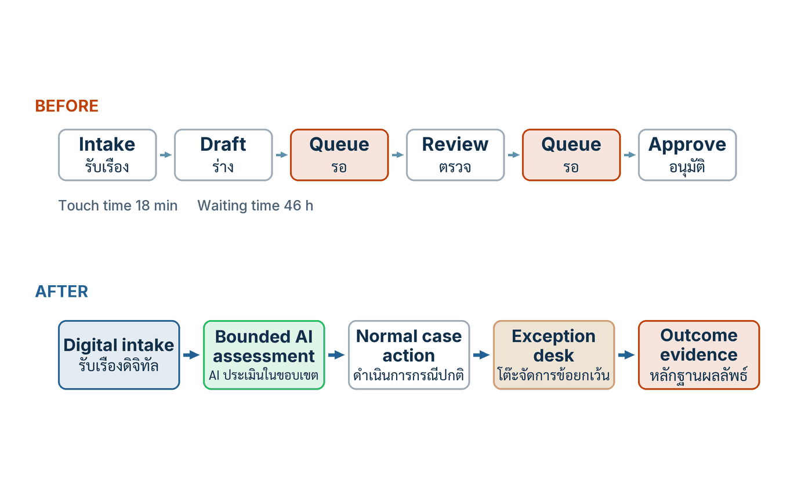

ในบทความนี้
- 1. ด่านพิธีกรรม — เมื่อ "มีคนตรวจ" ยังไม่ใช่การควบคุม
- 2. Task automation กับ Workflow redesign — เร็วขึ้นสิบเท่าแต่ส่งงานช้าเท่าเดิม
- 3. สี่เลนที่ทำงานร่วมกัน — ใครถืออะไร และห้ามถืออะไร
- 4. แบ่งงานตามความได้เปรียบเชิงเปรียบเทียบและระดับผลกระทบ
- 5. LannaBuild Engineering — ย้ายการออกแบบขึ้นไปต้นน้ำ
- 6. เวิร์กช็อป Workflow teardown and rebuild — เจ็ดขั้น และตารางกำกับสี่เลน
- 7. ตัวชี้วัดสำคัญ รูปแบบความล้มเหลว และเส้นทางฝั่งไทย
- 8. เส้นทางข้างหน้า — จากลูกศรบนกระดานไปสู่หลักฐาน
In this post
- 1. The Ceremonial Checkpoint — When "Someone Reviews It" Is Not Yet a Control
- 2. Task Automation vs Workflow Redesign — Ten Times Faster, Delivered Just as Slowly
- 3. Four Coordinated Lanes — Who Holds What, and What They Must Never Hold
- 4. Allocating Work by Comparative Advantage and Consequence
- 5. LannaBuild Engineering — Moving the Design Point Upstream
- 6. The Workflow Teardown and Rebuild Session — Seven Steps and the Four-Lane Marking Table
- 7. Metrics That Matter, Failure Patterns, and the Thai Pathway
- 8. The Road Ahead — From Arrows on a Whiteboard to Evidence
🤔 ถ้าผู้ตรวจมีเวลาสองนาทีต่อเรื่อง ไม่เห็นแหล่งข้อมูล และปฏิเสธไม่ได้ เขาเป็น "การควบคุม" หรือ "ผู้รับผิดแทน"?
ตอนที่แล้ว #5 Decision Portfolio จบลงตรงที่คุณมีรายการการตัดสินใจที่จำแนกแล้วสามมิติ และเลือกท่าไว้สี่ท่า — ขยาย จำกัดขอบเขต ออกแบบใหม่ หรือยุติ ตอนนี้คือตอนแรกของกลุ่ม Redesign และเป็นตอนที่ต้องลงมือกับคำว่า "ออกแบบใหม่" จริง ๆ เพราะการเลือกได้ว่าจะปรับปรุงการตัดสินใจข้อไหน ยังไม่ได้บอกเลยว่ากระบวนงานรอบการตัดสินใจนั้นควรมีหน้าตาอย่างไร และคนควรไปยืนอยู่ตรงไหนของมัน
คำตอบหนึ่งบรรทัดของคำถามข้างบนคือ เขาเป็นผู้รับผิดแทน — "การมีมนุษย์อยู่ในวงจร" กลายเป็นการควบคุมได้ก็ต่อเมื่อคนคนนั้นมีครบสี่อย่าง คือหลักฐาน เวลา ความสามารถ และอำนาจที่จะไม่เห็นด้วย ขาดข้อใดข้อหนึ่ง สิ่งที่คุณติดตั้งไว้ในกระบวนงานไม่ใช่ด่านตรวจ แต่เป็นด่านพิธีกรรมที่ดูดซับความรับผิดเมื่อเกิดเรื่อง โดยไม่ได้ป้องกันอะไรเลย ที่เหลือของบทความนี้คือวิธีออกแบบให้มันเป็นด่านตรวจจริง ด้วยสี่เลน หนึ่งเวิร์กช็อปเจ็ดขั้น และตัวชี้วัดที่บอกได้ว่าการออกแบบนั้นทำงานหรือไม่
1. ด่านพิธีกรรม — เมื่อ "มีคนตรวจ" ยังไม่ใช่การควบคุม
บทที่ 4 ของคู่มือเปิดด้วยประโยคเดียวที่ผมคิดว่าเป็นประโยคที่แพงที่สุดในเล่ม เพราะมันทำลายคำตอบที่ทีมส่วนใหญ่ใช้ปิดคำถามเรื่องความเสี่ยงมาตลอดสองปี[1]
"Human in the loop is not a design. It becomes a control only when the person has evidence time competence and authority to disagree."
ฉบับภาษาไทยของหน้าเดียวกันขยายความไว้ตรงกว่านั้นอีก[1]
"การมีมนุษย์อยู่ในวงจรยังไม่ใช่การออกแบบ ผู้ตรวจที่ไม่มีเวลา หลักฐาน อำนาจ หรือความเชี่ยวชาญอาจเป็นเพียงด่านพิธีกรรมที่รับผิดเมื่อเกิดปัญหาแต่ป้องกันไม่ได้ การออกแบบที่ดีต้องเริ่มจากการตัดสินใจ แล้วแยกงานออกเป็น Task จุดส่งต่อ หลักฐาน และผลที่ตามมา"
ผมอยากให้คุณอ่านคำว่า ด่านพิธีกรรม ช้า ๆ อีกครั้ง เพราะมันไม่ใช่คำด่า มันเป็นคำวินิจฉัย ในเอกสารการกำกับดูแลของเกือบทุกองค์กรที่ผมได้อ่านในปีนี้ มีบรรทัดที่เขียนว่า "มีการตรวจสอบโดยมนุษย์ก่อนดำเนินการ" อยู่เสมอ และในเกือบทุกกรณี บรรทัดนั้นคือทั้งหมดที่เขียนไว้ ไม่มีต่อว่าผู้ตรวจเห็นอะไร ใช้เวลาเท่าไร มีคุณสมบัติอะไร และถ้าเขาปฏิเสธแล้วเรื่องจะเดินต่อไปทางไหน บรรทัดนั้นจึงทำหน้าที่เดียวคือย้าย ความรับผิดรับชอบ (accountability) จากระบบไปไว้บนตัวคน โดยไม่ได้เพิ่มความสามารถในการป้องกันความผิดพลาดขึ้นแม้แต่นิดเดียว
ในทางออกแบบ วิธีแก้คือเลิกเขียนคำว่า "มีคนตรวจ" แล้วเปลี่ยนเป็นการระบุเงื่อนไขสี่ข้อให้ครบ พร้อมหลักฐานที่ชี้ได้ว่าเงื่อนไขนั้นมีอยู่จริง ไม่ใช่มีอยู่ในนโยบาย ตารางข้างล่างคือแบบฟอร์มที่ผมใช้ซักกระบวนงานในนาทีแรกของทุกการทบทวน
| Condition | คำถามทดสอบ | หลักฐานที่ต้องมีอยู่จริง | อาการเมื่อขาด |
|---|---|---|---|
| Evidence หลักฐาน | ในหน้าจอที่ผู้ตรวจตัดสิน เขาเห็นอะไรบ้าง | แหล่งข้อมูลที่ย้อนดูได้ ค่าความไม่แน่นอน กรณีใกล้เคียงในอดีต และ Trace ของขั้นตอนก่อนหน้า | ผู้ตรวจอ่าน "ความลื่นไหลของภาษา" แทนที่จะอ่านความถูกต้อง |
| Time เวลา | ระบบออกแบบให้ใช้เวลากี่นาทีต่อเรื่อง และงานจริงต้องใช้กี่นาที | สถิติคิว เวลาที่ใช้จริงต่อเรื่อง และขนาดคิวสูงสุดที่ประกาศไว้ | อนุมัติแบบประทับตรา เพราะคิวยาวกว่ากำลังตรวจอย่างถาวร |
| Competence ความสามารถ | ผู้ตรวจมีคุณสมบัติอะไรจึงตรวจเรื่องประเภทนี้ได้ | เกณฑ์คุณสมบัติที่เขียนไว้ต่อประเภทงาน และทะเบียนผู้ตรวจที่ผ่านเกณฑ์ | ผู้เชี่ยวชาญคนเดียวถูกตั้งเป็นผู้ตรวจของทุกอย่าง |
| Authority อำนาจ | ถ้าผู้ตรวจปฏิเสธ เกิดอะไรขึ้นต่อจากนั้น | เส้นทางปฏิเสธที่มีปลายทางชัด สิทธิ์หยุดงาน และการบันทึกเหตุผลที่อ่านย้อนได้ | ปฏิเสธได้ในทางทฤษฎี แต่ไม่มีใครรับเรื่องต่อ จึงไม่มีใครกล้าปฏิเสธ |
สังเกตว่าคอลัมน์ที่สามไม่ได้ถามหาความตั้งใจ มันถามหาสิ่งของ — หน้าจอ ตัวเลข ทะเบียน เส้นทาง สิ่งที่ชี้ได้ ถ้าทีมตอบคอลัมน์นี้ด้วยคำว่า "เรามีนโยบาย" นั่นแปลว่าเงื่อนไขข้อนั้นยังไม่มีอยู่จริง และด่านนั้นยังเป็นด่านพิธีกรรม
ข้อสังเกตนี้เก่ากว่า AI สี่ทศวรรษ
ผมอยากถ่วงน้ำหนักเรื่องนี้ด้วยการชี้ว่ามันไม่ใช่ปัญหาที่เพิ่งเกิดขึ้นพร้อม foundation model Lisanne Bainbridge ตีพิมพ์บทความชื่อ "Ironies of automation" ในวารสาร Automatica เมื่อเดือนพฤศจิกายน ปี 1983 — นับถึงปีที่ผมเขียนบทความนี้คือ 43 ปี — และมันยังคงเป็นบทความที่ถูกอ้างถึงอย่างต่อเนื่อง โดย Semantic Scholar บันทึกจำนวนการอ้างอิงไว้ที่ 2,572 ครั้ง ณ วันที่ผมตรวจสอบ[2]
ต้องพูดให้ตรงสองข้อ ข้อแรก บทความนั้นเขียนถึงระบบควบคุมในโรงงานอุตสาหกรรม ไม่ได้เขียนถึง AI สมัยใหม่ และไม่ได้ "ทำนาย" ปัญหา human in the loop ของยุคนี้ไว้ล่วงหน้า ข้อสอง บทความอยู่หลังกำแพงค่าสมัครสมาชิกของสำนักพิมพ์ และบทคัดย่อถูกถอนออกจากฐานข้อมูลดัชนี ผมจึงยืนยันได้เพียงตัวตนทางบรรณานุกรมของมัน ไม่ได้ยืนยันเนื้อความ — ผมจึงอ้างชื่อบทความและปีเท่านั้น ไม่ยกประโยคใดจากมันมาเลย การเชื่อมโยงมันเข้ากับปัญหาผู้ตรวจใน workflow ของ AI เป็นการสังเคราะห์ของผมเอง ไม่ใช่ข้อสรุปของผู้เขียน
แต่ลำดับความคิดนั้นตรงจนน่าสนใจ วิศวกรรมความปลอดภัยรู้จักรูปแบบนี้มานานมาก — เมื่อระบบอัตโนมัติทำงานปกติได้ดีกว่ามนุษย์เกือบตลอดเวลา บทบาทที่เหลือให้มนุษย์คือการ "เฝ้าดู" ซึ่งเป็นงานที่มนุษย์ทำได้แย่ที่สุด และพอถึงวินาทีที่ระบบล้ม เราก็คาดหวังให้คนที่ไม่ได้ลงมือมานานเข้ามารับช่วงต่อในสถานการณ์ที่ยากที่สุด นี่คือเหตุผลที่คู่มือไม่ยอมให้ "มีคนตรวจ" นับเป็นการออกแบบ และยืนยันว่าการออกแบบต้องเริ่มจากการตัดสินใจแล้วแยกงานลงไปเป็น Task จุดส่งต่อ หลักฐาน และผลที่ตามมา
คำว่า "เริ่มจากการตัดสินใจ" ตรงนี้ต่อจากตอนที่แล้วพอดี บัญชีรายการการตัดสินใจ (decision inventory) ที่คุณสร้างไว้ใน #5 คือจุดตั้งต้นของกระบวนงาน ไม่ใช่รายการเครื่องมือ และหัวข้อถัดไปคือเหตุผลว่าทำไมการเริ่มผิดจุดจึงให้ผลลัพธ์ที่ดูดีบนสไลด์แต่ไม่ขยับอะไรเลยในความเป็นจริง
2. Task automation กับ Workflow redesign — เร็วขึ้นสิบเท่าแต่ส่งงานช้าเท่าเดิม
มาสเตอร์คลาสที่เป็นต้นทางของคู่มือแยกสองคำนี้ออกจากกันในช่วง 19:44–22:16 และคู่มือนำมาขยายต่อในภาคผนวก A หัวข้อ 8[3] ใจความคือ การทำ Task automation เพียงขั้นตอนเดียวในกระบวนงานที่ออกแบบไม่ดี สามารถสร้างตัวเลขเฉพาะจุดที่น่าประทับใจมาก โดยแทบไม่เปลี่ยนผลลัพธ์ตั้งแต่ต้นจนจบเลย ตัวอย่างที่คู่มือยกคือเอกสารที่เคยใช้เวลาร่างสองชั่วโมง เหลือสองนาที แต่ยังต้องรอผ่านการอนุมัติห้าชั้นเหมือนเดิม
ผมเจอรูปแบบนี้บ่อยจนเรียกมันว่า "กับดักสไลด์แรก" เพราะตัวเลขจากสองชั่วโมงเหลือสองนาทีนั้นจริง มันวัดได้ พิสูจน์ได้ และมันทำให้ทุกคนในห้องพยักหน้า ปัญหาคือมันวัดผิดหน่วย หน่วยที่ลูกค้ารู้สึกได้คือเวลาตั้งแต่เขายื่นเรื่องจนได้คำตอบ ไม่ใช่เวลาที่ใครสักคนใช้พิมพ์ร่าง และในกระบวนงานส่วนใหญ่ เวลาที่ลูกค้ารอไม่ได้อยู่ในขั้นตอนที่คนลงมือทำ มันอยู่ในช่องว่างระหว่างขั้นตอน
{kind=link}

แถบบนของรูปคือกระบวนงานแบบเดิม รับเรื่อง → ร่าง → รอ → ตรวจ → รอ → อนุมัติ สองกล่องที่ถูกไฮไลต์ไว้คือกล่อง "รอ" ทั้งสองกล่อง เพราะนั่นคือที่ที่เวลาหายไป ตัวเลขใต้แถบเขียนว่าเวลาที่มีคนลงมือทำจริงรวมกัน 18 นาที ขณะที่เวลารอรวมกัน 46 ชั่วโมง
แถบล่างคือเส้นทางที่ออกแบบใหม่ รับเรื่องดิจิทัล → AI ประเมินในขอบเขต → ดำเนินการกรณีปกติ → โต๊ะจัดการข้อยกเว้น → พยานหลักฐานผลลัพธ์ สามบรรทัดใต้แถบสรุปเจตนาของการออกแบบทั้งหมดไว้ — กรณีปกติไหลต่อเนื่อง คนเป็นเจ้าของความคลุมเครือและผลกระทบ และทุกผลลัพธ์ป้อนกลับเข้าสู่การเรียนรู้
ข้อแตกต่างที่สำคัญที่สุดระหว่างสองแถบนี้ไม่ใช่จำนวนกล่อง แต่คือสิ่งที่กล่องแต่ละใบเป็น ในแถบบน กล่องคือขั้นตอนของงานเอกสาร ในแถบล่าง กล่องคือจุดที่มีการตัดสินใจและมีหลักฐานถูกผลิตขึ้น "โต๊ะจัดการข้อยกเว้น" ไม่ใช่ชื่อสวย ๆ ของการตรวจ มันคือหน่วยงานที่มีคุณสมบัติ มีคิวของตัวเอง มีอำนาจปฏิเสธ และมีเส้นทางส่งต่อความไม่แน่นอน ซึ่งก็คือเงื่อนไขสี่ข้อในหัวข้อ 1 ที่ถูกทำให้เป็นโครงสร้างองค์กรจริง
คู่มือสรุปเส้นทางใหม่นี้เป็นหกจังหวะ ซึ่งผมใช้เป็นแบบตรวจเวลาวาดกระบวนงานใหม่ทุกครั้ง — ตรวจสอบ Input ที่รับเข้ามา สร้างค่าประมาณ ใช้กฎที่ประกาศไว้ร่วมกับดุลยพินิจ ทำกรณีธรรมดาให้เป็นอัตโนมัติ ส่งกรณีข้อยกเว้นไปยังคนที่มีคุณสมบัติ และบันทึก Outcome กลับมา ถ้ากระบวนงานใหม่ของคุณขาดจังหวะใดจังหวะหนึ่งไป มันมักจะขาดจังหวะสุดท้าย และนั่นคือจังหวะเดียวที่ทำให้ระบบดีขึ้นในรอบถัดไป
| Dimension | Task automation | Workflow redesign |
|---|---|---|
| หน่วยที่ออกแบบ | ขั้นตอนเดียวภายในสายงานเดิม | ผลลัพธ์ปลายทาง แล้วย้อนกลับมาออกแบบเส้นทางทั้งเส้น |
| คำถามตั้งต้น | ขั้นตอนไหนใส่ AI ได้บ้าง | ผลลัพธ์ที่ต้องการคืออะไร และเส้นทางใหม่ควรมีจุดส่งต่อกี่จุด |
| สิ่งที่เปลี่ยนจริง | ความเร็วของขั้นตอนนั้น | จุดส่งต่อ สิทธิ์ เกณฑ์ เส้นทางข้อยกเว้น และเจ้าของผลลัพธ์ |
| ตัวเลขที่มักถูกอ้าง | เวลาต่อขั้นตอนลดลงกี่เท่า | Cycle Time ตั้งแต่ต้นจนจบ และอัตราผ่านครั้งแรก |
| ความเสี่ยงที่ตามมา | เร็วเฉพาะจุด ขณะที่งานแก้ปลายน้ำเพิ่มขึ้น | ต้องออกแบบ Governance ไปพร้อมกัน เพราะสเกลเดียวกันที่ขยายความสำเร็จก็ขยายความผิดพลาด |
บรรทัดสุดท้ายของตารางคือประโยคที่คู่มือย้ำไว้ตรง ๆ ว่า Performance กับ Governance ต้องถูกออกแบบพร้อมกัน[1] ผมเห็นด้วยแบบไม่มีเงื่อนไข เพราะการออกแบบกระบวนงานใหม่โดยไม่แตะเรื่องสิทธิ์และเส้นทางข้อยกเว้น คือการเพิ่มอัตราการผลิตของทั้งของดีและของเสียพร้อมกันในสัดส่วนเดิม และสิ่งที่คุณจะได้กลับมาคือปริมาณงานแก้ที่โตตามสเกล
คำที่คู่มือใช้เรียกงานทั้งหมดนี้คือ การออกแบบกระบวนงานใหม่ (workflow redesign) และเครื่องมือหลักของมันคือการแบ่งงานออกเป็นสี่เลน
3. สี่เลนที่ทำงานร่วมกัน — ใครถืออะไร และห้ามถืออะไร
ข้อเสนอกลางของบทที่ 4 คือให้เลิกถามว่า "งานนี้คนทำหรือ AI ทำ" เพราะคำถามแบบสองทางเลือกนั้นบังคับให้คำตอบผิดเสมอ แล้วเปลี่ยนเป็นการวางงานลงในสี่เลนที่ทำงานร่วมกัน คู่มือเขียนชื่อเลนทั้งสี่ไว้แบบนี้[1]
"ใช้สี่เลนที่ทำงานร่วมกัน เป้าหมายและวิจารณญาณ เป็นของมนุษย์ที่กำหนดผลลัพธ์ ข้อจำกัด ข้อยกเว้น และคุณค่าที่ข้อมูลอดีตให้ไม่ได้ การสร้างและวิเคราะห์ ให้ AI ค้น เปรียบเทียบ ร่าง จำแนก หรือเสนอภายในขอบเขต การควบคุมเชิงโครงสร้าง ใช้ซอฟต์แวร์กำหนดสิทธิ์ Schema วงเงิน รายชื่อแหล่งข้อมูล ธุรกรรม และ Trace การตรวจและกู้คืน ให้ผู้มีคุณสมบัติหรือการทดสอบอิสระมีข้อมูลและอำนาจปฏิเสธ ส่งต่อความไม่แน่นอน อนุมัติผลกระทบ และหยุดหรือย้อนระบบ"
ก่อนจะลงรายละเอียด ผมอยากชี้ที่มาของกรอบนี้ให้ชัด สี่เลนนี้เป็นการสังเคราะห์ของคู่มือเอง ไม่ได้มาจากมาสเตอร์คลาส ไม่ได้มาจากมาตรฐานสากลฉบับใด และไม่ได้มาจาก ETDA หรือ MIT ผมอ้างมันในฐานะโครงการทำงานที่ใช้ได้ ไม่ใช่ในฐานะข้อกำหนด
คุณค่าของกรอบนี้อยู่ที่คอลัมน์ "ห้ามถืออะไร" มากกว่าคอลัมน์ "ถืออะไร" เพราะความล้มเหลวส่วนใหญ่ที่ผมเห็นไม่ได้เกิดจากการที่เลนใดเลนหนึ่งทำงานของตัวเองไม่ได้ แต่เกิดจากการที่เลนหนึ่งถูกใช้แทนอีกเลนหนึ่ง โดยเฉพาะการเอาเลนที่สี่ไปทำงานของเลนที่สาม
| Lane | ถืออะไร | ห้ามถืออะไร | หลักฐานที่เลนนี้ผลิต |
|---|---|---|---|
| เป้าหมายและวิจารณญาณ Purpose and judgment |
นิยามผลลัพธ์ที่ต้องการ ข้อจำกัด นิยามของข้อยกเว้น และคุณค่าที่ข้อมูลอดีตให้ไม่ได้ | ห้ามถูกใช้เป็นแรงงานตรวจงานจำนวนมากแทนเครื่อง และห้ามถูกเรียกมาตัดสินหลังผลเกิดไปแล้ว | เอกสารเป้าหมายและข้อจำกัดที่ลงนาม นิยามข้อยกเว้น เกณฑ์การยอมรับ |
| การสร้างและวิเคราะห์ Generation and analysis |
ค้น เปรียบเทียบ ร่าง จำแนก และเสนอ ภายในขอบเขตที่ประกาศไว้ | ห้ามเป็นผู้ทำให้เกิดผลจริงด้วยตัวเอง และห้ามเป็นผู้กำหนดขอบเขตของตัวเอง | ข้อเสนอที่มีที่มาอ้างอิงได้ ค่าความไม่แน่นอน และเหตุผลประกอบ |
| การควบคุมเชิงโครงสร้าง Structural control |
ซอฟต์แวร์แบบ Deterministic ที่บังคับสิทธิ์ Schema วงเงิน รายชื่อแหล่งข้อมูล ธุรกรรม และการเก็บ Trace | ห้ามถูกแทนที่ด้วยการเตือนในคู่มือ การอบรม หรือความตั้งใจของผู้ใช้ | ผลการบังคับกฎที่บันทึกไว้ทุกครั้ง ทั้งครั้งที่ผ่านและครั้งที่ถูกปฏิเสธ |
| การตรวจและกู้คืน Verification and recovery |
ผู้มีคุณสมบัติหรือการทดสอบอิสระ ที่มีข้อมูลและอำนาจปฏิเสธ ส่งต่อความไม่แน่นอน อนุมัติผลกระทบ และหยุดหรือย้อนระบบ | ห้ามถูกใช้ตรวจสิ่งที่เลนที่สามบังคับได้อยู่แล้ว และห้ามมีคิวเกินกำลังที่ประกาศไว้ | เหตุผลการอนุมัติและ Override บันทึกการปฏิเสธ และหลักฐานว่าย้อนระบบได้จริง |
เลนที่สามคือเลนที่ถูกละเลยมากที่สุด และเป็นเลนที่ชี้ขาดว่ากระบวนงานของคุณจะเป็นการควบคุมหรือเป็นพิธีกรรม การกำกับดูแลโดยมนุษย์ (human oversight) ไม่ควรถูกใช้ทำงานที่ซอฟต์แวร์ทำได้แน่นอนกว่า ถูกกว่า และไม่เหนื่อย เช่น การตรวจว่าเลขบัญชีปลายทางอยู่ในรายชื่อที่อนุมัติหรือไม่ ยอดรวมเกินวงเงินของผู้ทำรายการหรือไม่ หรือเอกสารแนบครบตาม Schema หรือไม่ ทุกครั้งที่คุณให้คนทำงานสามอย่างนี้ คุณกำลังใช้ทรัพยากรที่หายากที่สุดในองค์กรไปกับงานที่มีอัตราพลาดสูงที่สุดของมนุษย์ และคุณกำลังกินเวลาที่เขาควรใช้กับสิ่งที่เขาเท่านั้นที่ทำได้
💡 มุมมองของผม: หลักปฏิบัติข้อที่ 3 ของบทนี้เขียนไว้ว่า "อย่าใช้สมาธิมนุษย์บังคับสิ่งที่ซอฟต์แวร์บังคับได้ สิทธิ์ Schema และวงเงินควรเป็น Hard Control"[1] — ผมใช้ประโยคนี้เป็นข้อสอบข้อแรกของทุกกระบวนงานที่เข้ามาให้ทบทวน ถ้ารายการตรวจของผู้ตรวจมีข้อที่เขียนได้เป็นเงื่อนไข if แสดงว่าข้อนั้นไม่ควรอยู่ในรายการตรวจตั้งแต่แรก มันควรอยู่ในโค้ด และทุกข้อที่เราย้ายออกจากสายตาคนไปไว้ในโค้ด คือเวลาที่เราคืนกลับให้เขาไปใช้กับข้อยกเว้น ซึ่งเป็นงานเดียวที่คนทำได้ดีกว่าเครื่องอย่างชัดเจน
อีกจุดที่ต้องระวังคือความสัมพันธ์ระหว่างเลนที่สองกับเลนที่สี่ ข้อเสนอที่ AI ผลิตออกมามีคุณสมบัติที่อันตรายอย่างหนึ่ง คือมันอ่านลื่นเสมอ ไม่ว่าจะถูกหรือผิด ระดับผลกระทบ (consequence) ของข้อเสนอจึงต้องถูกประเมินจากสิ่งที่มันจะไปทำ ไม่ใช่จากความน่าเชื่อถือของภาษาที่มันใช้ และ อำนาจตัดสินใจ (decision authority) ที่ระบบได้รับต้องสอดคล้องกับระดับผลกระทบนั้น ไม่ใช่กับความมั่นใจของโมเดล เรื่องนี้คือแกนของตอนหน้าทั้งตอน
4. แบ่งงานตามความได้เปรียบเชิงเปรียบเทียบและระดับผลกระทบ
มีคำถามที่ตามมาทันทีหลังจากวางสี่เลนเสร็จ คือแล้วในทางปฏิบัติ Task หนึ่ง ๆ ควรถูกจัดให้อยู่ในโหมดไหน มาสเตอร์คลาสตอบคำถามนี้ในช่วง 15:58–19:44 และคู่มือถอดความไว้ในภาคผนวก A หัวข้อ 7[3] คำตอบเริ่มจากการปฏิเสธจุดยืนสองอย่างพร้อมกัน — ไม่เริ่มจากความเชื่อว่า "ต้องทำอัตโนมัติให้ได้มากที่สุด" และไม่เริ่มจากความเชื่อว่า "ทุกกรณีต้องมีคนอนุมัติ" แต่แบ่งงานตามความได้เปรียบเชิงเปรียบเทียบและตามระดับผลกระทบ
คำว่า ความเกื้อหนุนระหว่างคนกับ AI (human–AI complementarity) ในคู่มือหมายถึงเรื่องนี้โดยตรง ไม่ใช่คำขวัญเรื่องความร่วมมือ แต่เป็นข้อความเชิงเศรษฐศาสตร์ว่าแต่ละฝ่ายควรทำสิ่งที่ตัวเองเสียเปรียบน้อยที่สุด และสิ่งที่ตัดสินว่าจะยอมให้เกิดข้อผิดพลาดในระดับใดได้ คือผลกระทบเมื่อผิด ไม่ใช่ความสามารถเฉลี่ยของเครื่องมือ
| Mode | เลือกเมื่อ | คนทำอะไร | AI ทำอะไร | ต้องมีอะไรก่อนจึงใช้โหมดนี้ได้ |
|---|---|---|---|---|
| Human-only | หลักฐานยังไม่ดีพอ ผลกระทบสูง หรือความสัมพันธ์และความรับผิดชอบส่วนบุคคลเป็นสาระของงานนั้น | ทำทั้งหมด ตั้งแต่ตั้งคำถามจนถึงรับผิดชอบผล | ไม่มีบทบาท หรือมีได้เฉพาะการค้นข้อมูลที่ไม่เข้าไปในเหตุผลของคำตัดสิน | คำอธิบายว่าทำไมงานนี้อยู่ในกลุ่มนี้ และเงื่อนไขที่จะทำให้มันย้ายออกได้ในอนาคต |
| Human plus AI | ปริมาณงานสูง หลักฐานพอใช้ได้ และดุลยพินิจของคนยังเปลี่ยนผลลัพธ์อย่างมีนัย | ตัดสิน ชั่งน้ำหนัก และรับผิดชอบผล | รวบรวม คาดการณ์ สรุป และเสนอทางเลือกพร้อมที่มา | กำลังการตรวจที่คำนวณแล้ว ไม่ใช่ความหวังว่าทีมเดิมจะรับไหว |
| AI-first with oversight | กรณีปกติมีนิยามชัด ผลกระทบต่อกรณีต่ำถึงกลาง และมีเส้นทางย้อนกลับที่ทดสอบแล้ว | เฝ้าดูภาพรวม จัดการข้อยกเว้น กำหนดกรอบดุลยพินิจ สื่อสาร และเป็นเจ้าของผลลัพธ์ | จัดการกรณีปกติภายในขอบเขตที่ประกาศไว้ | ขอบเขตที่เขียนไว้ชัด เกณฑ์ส่งต่อความไม่แน่นอน และหลักฐานว่าหยุดหรือย้อนระบบได้จริง |
คู่มือเติมประโยคหนึ่งต่อท้ายตารางแบบนี้ ซึ่งผมคิดว่าเป็นประโยคที่หัวหน้าฝ่ายบุคคลควรอ่านมากกว่าหัวหน้าฝ่ายเทคโนโลยี — บทบาทของคนจะเลื่อนจากการลงมือทำทุกขั้นตอน ไปเป็นการตรวจ การจัดการข้อยกเว้น การกำหนดกรอบดุลยพินิจ การสื่อสาร และการเป็นเจ้าของผลลัพธ์ ดังนั้น Reskilling จึงมากกว่าการสอนเขียน Prompt มันคือการเตรียมคนให้รับส่วนผสมของงานชุดใหม่[1]
หลักฐานเตือนว่าไม่มีกระบวนงานสูตรเดียวที่ใช้ได้ทุกที่
คู่มือวางหลักฐานสามชิ้นไว้ตรงนี้เพื่อกันไม่ให้ผู้อ่านเลือกโหมดจากความรู้สึก ผมยกมาเพียงย่อหน้าเดียวและยกมาเพื่อเหตุผลเดียว คือเพื่อบอกว่าต้องวัดในงานจริงของคุณเอง ไม่ใช่เพื่อใช้เป็นเป้าหมาย ตัวเลขทั้งสามชุดนี้เป็นหัวใจของตอนหน้า ไม่ใช่ของตอนนี้
ชิ้นแรก การใช้งานจริงกับเจ้าหน้าที่บริการลูกค้า 5,179 คนในบริษัทเดียว พบว่าจำนวนเรื่องที่ปิดได้ต่อชั่วโมงเพิ่มขึ้นเฉลี่ย 14% โดยกลุ่มประสบการณ์น้อยเพิ่มถึง 34% ส่วนกลุ่มเชี่ยวชาญสูงแทบไม่เปลี่ยน — เป็นผลจากบริษัทเดียว กระบวนงานเดียว และช่วงเวลาเดียว ไม่ใช่ค่าที่ยกไปใช้กับงานอื่นได้ และงานชิ้นนี้ยังเป็น working paper ไม่ใช่บทความที่ผ่าน peer review[4] ชิ้นที่สอง การทดลองแบบลงทะเบียนล่วงหน้ากับที่ปรึกษา 758 คน พบว่าในงานที่อยู่ในขอบเขตความสามารถของโมเดล ผู้ใช้ AI ทำงานได้มากขึ้น 12.2% และเร็วขึ้น 25.1% แต่ในงานบริหารซับซ้อนหนึ่งงานที่เลือกให้อยู่นอกขอบเขต โอกาสตอบถูกกลับลดลง 19% — เป็นงานจำลอง ประชากรเดียว โมเดลรุ่นเดียว และเส้นขอบเขตนั้นขยับได้[5] ชิ้นที่สาม Meta-analysis ปี 2024 จาก 106 การทดลอง (370 effect size) พบว่าระบบคนบวก AI ดีกว่าคนอย่างเดียวโดยเฉลี่ย (g = 0.64) แต่แย่กว่าฝ่ายที่เก่งกว่าระหว่างคนกับ AI (g = −0.23) และงานประเภทตัดสินใจคือกลุ่มที่เสียผลชัดที่สุด — งานวิจัยที่รวบรวมสิ้นสุดมิถุนายน 2023 และมีความแปรปรวนสูง จึงต้องวัดในงานจริงของเราเอง[6]
ผมขอย้ำเงื่อนไขของชิ้นที่สาม เพราะมันเป็นชิ้นที่ถูกยกไปใช้ผิดบ่อยที่สุด ค่าทั้งสองต้องเดินทางไปด้วยกันเสมอ การยก −0.23 ไปอย่างเดียวทำให้อ่านเหมือนงานวิจัยบอกว่าคนบวก AI แย่กว่าไม่ทำอะไร ซึ่งไม่ใช่ และการยก 0.64 ไปอย่างเดียวทำให้อ่านเหมือนงานวิจัยรับรองว่าจับคู่แล้วดีขึ้นเสมอ ซึ่งก็ไม่ใช่ ข้อสรุปเชิงออกแบบที่คู่มือดึงออกมาจากหลักฐานทั้งสามชิ้นจึงเป็นประโยคเดียว — ให้วัดทั้งสามแบบ คือ Human-only, AI-only และแบบผสม บนงานจริงชิ้นเดียวกัน แล้วค่อยเลือก[1]
5. LannaBuild Engineering — ย้ายการออกแบบขึ้นไปต้นน้ำ
คู่มือใช้กรณีของ LannaBuild Engineering (กรณีสมมติจากหนังสือ) เป็นตัวอย่างของการย้ายจุดออกแบบ และผมชอบกรณีนี้เพราะมันเริ่มจากความล้มเหลวที่ตรงกับหัวข้อ 1 แบบพอดีเป๊ะ
รูปแบบเดิมคือ สั่งให้ AI เขียนข้อเสนอประมูลทั้งฉบับ แล้วให้วิศวกรอาวุโสหนึ่งคนอ่านร่างยาวภายใต้เส้นตาย นี่คือด่านพิธีกรรมในรูปแบบที่บริสุทธิ์ที่สุด วิศวกรคนนั้นมีความสามารถครบ แต่ไม่มีเวลา ไม่มีหลักฐานว่าข้อความแต่ละย่อหน้ามาจากไหน และในทางปฏิบัติก็ไม่มีอำนาจปฏิเสธ เพราะการปฏิเสธแปลว่าไม่ได้ยื่นซองทัน องค์กรจึงได้ความเร็วในการร่างมา และได้ความเสี่ยงที่ไม่มีใครมองเห็นแถมมาด้วย
การออกแบบใหม่ของ LannaBuild ไม่ได้เริ่มที่การทำให้การตรวจดีขึ้น มันเริ่มก่อนหน้านั้น — เริ่มก่อนการเขียน ซึ่งเป็นการย้ายจุดออกแบบขึ้นไปต้นน้ำ ตารางข้างล่างคือการถอดกระบวนงานใหม่ของคู่มือ แล้วกำกับแต่ละขั้นด้วยเลนจากหัวข้อ 3 ตัวกระบวนงานเป็นของคู่มือ ส่วนคอลัมน์เลนและหลักฐานเป็นการกำกับของผมเอง
| ขั้นตอนหลังออกแบบใหม่ | Lane | เหตุผล | หลักฐานที่ผลิตออกมา |
|---|---|---|---|
| AI แยกข้อกำหนดจากเอกสารประมูล และสร้าง Compliance Matrix ที่ย้อนดูแหล่งได้ | การสร้างและวิเคราะห์ | เป็นงานค้นและจำแนกปริมาณมากในขอบเขตที่ชัด และผลลัพธ์ตรวจย้อนได้ทีละบรรทัด | Compliance Matrix ที่ทุกแถวชี้กลับไปยังหน้าและข้อของเอกสารต้นทาง |
| ระบบ Deterministic ตรวจวันที่ ยอดรวม หน่วย และเอกสารบังคับ | การควบคุมเชิงโครงสร้าง | ทั้งสี่อย่างเขียนเป็นกฎได้ทั้งหมด จึงไม่ควรใช้สายตาคน | รายการข้อที่ไม่ผ่าน พร้อมกฎที่ถูกละเมิดและเวลาที่ตรวจ |
| ผู้เชี่ยวชาญเขียนข้อยกเว้นทางเทคนิค | เป้าหมายและวิจารณญาณ | เป็นจุดที่ข้อมูลอดีตให้คำตอบไม่ได้ และเป็นจุดที่ดุลยพินิจเปลี่ยนผลจริง | ข้อยกเว้นที่มีเจ้าของชื่อกำกับ พร้อมเหตุผลทางวิศวกรรม |
| AI ประกอบเฉพาะโมดูลที่อนุมัติแล้ว | การสร้างและวิเคราะห์ ภายใต้ขอบเขตของการควบคุมเชิงโครงสร้าง | ขอบเขตถูกจำกัดด้วยรายชื่อโมดูลที่อนุมัติ ไม่ใช่ด้วยคำสั่งใน Prompt | ร่างที่ทุกส่วนอ้างกลับไปยังโมดูลต้นทางที่มีสถานะอนุมัติ |
| เจ้าของด้านพาณิชย์และกฎหมายอนุมัติราคาและคำมั่น | การตรวจและกู้คืน | ราคาและคำมั่นคือสองสิ่งที่ผูกพันองค์กร จึงต้องมีเจ้าของที่มีอำนาจจริงลงนาม | บันทึกการอนุมัติแยกตามประเภทข้อผูกพัน พร้อมเหตุผล |
| ข้อกล่าวอ้างที่ไม่มีหลักฐานถูกระงับ ไม่ใช่ถูกไฮไลต์ | การควบคุมเชิงโครงสร้าง | การไฮไลต์คือการโยนงานกลับไปให้สายตาคนอีกครั้ง การระงับคือการไม่ให้มันเข้าสู่ร่างตั้งแต่แรก | รายการข้อความที่ถูกระงับ พร้อมเหตุผลว่าขาดหลักฐานอะไร |
| คำถามขอชี้แจงและเหตุผลที่แพ้ประมูล ถูกเพิ่มเข้าชุดประเมิน | การตรวจและกู้คืน ต่อเข้าวงจรการเรียนรู้ | เป็นจุดเดียวที่ผลลัพธ์จริงย้อนกลับมาเปลี่ยนระบบในรอบถัดไป | ชุดประเมินที่โตขึ้นทุกรอบ พร้อมวันที่และแหล่งที่มาของแต่ละรายการ |
บรรทัดที่หกคือบรรทัดที่ผมอยากให้คุณจำมากที่สุด — "ระงับ ไม่ใช่ไฮไลต์" ความแตกต่างนี้ดูเล็กมากบนกระดาษ แต่มันคือความแตกต่างระหว่างเลนที่สามกับเลนที่สี่ทั้งหมด การไฮไลต์ข้อความที่ไม่มีหลักฐานแล้วส่งให้คนตัดสิน คือการเพิ่มภาระให้ผู้ตรวจตามปริมาณที่ AI ผลิต ซึ่งแปลว่ายิ่งใช้มากยิ่งแย่ ส่วนการระงับคือการทำให้ข้อความนั้นไม่มีอยู่ในร่างเลย ภาระของผู้ตรวจจึงไม่โตตามปริมาณ และเวลาที่เขามีถูกสงวนไว้ให้กับข้อยกเว้นจริง ๆ
ผลลัพธ์ที่คู่มือสรุปไว้คือ AI ลดงานประกอบเอกสารลง ส่วนคนย้ายไปเน้นกลยุทธ์ ข้อยกเว้น คำมั่น และการเรียนรู้[1] ขอย้ำอีกครั้งว่ากรณีนี้เป็นกรณีสมมติ และคู่มือไม่ได้ให้ตัวเลขใด ๆ กับมันเลย ไม่มีมูลค่าซอง ไม่มีจำนวนคน ไม่มีอัตราชนะประมูล และผมจะไม่แต่งขึ้นมาเติม สิ่งที่ยืมไปใช้ได้คือลำดับของการออกแบบ ไม่ใช่ตัวเลขผลลัพธ์
6. เวิร์กช็อป Workflow teardown and rebuild — เจ็ดขั้น และตารางกำกับสี่เลน
ก่อนเข้าเวิร์กช็อป ผมอยากวางหลักปฏิบัติห้าประการของบทนี้ไว้เป็นกติกาของห้อง เพราะเจ็ดขั้นที่ตามมาจะกลายเป็นแบบฟอร์มเปล่า ๆ ถ้าไม่มีห้าข้อนี้กำกับ[1]
- แยกงานในระดับการตัดสินใจ ออกแบบ Task ที่สร้างผลลัพธ์ ไม่ทำตำแหน่งงานทั้งตำแหน่งให้เป็นอัตโนมัติ
- วางคนในจุดที่วิจารณญาณเปลี่ยนผล ใช้ผู้เชี่ยวชาญกับเป้าหมาย ข้อยกเว้น คำมั่น และความกำกวม
- อย่าใช้สมาธิมนุษย์บังคับสิ่งที่ซอฟต์แวร์บังคับได้ สิทธิ์ Schema และวงเงินควรเป็น Hard Control (ข้อที่ผมยกมาไว้ในหัวข้อ 3 แล้ว)
- ออกแบบการตรวจเป็นกำลังการผลิต ระบุคุณสมบัติผู้ตรวจ หลักฐาน เวลา ขนาดคิว และอำนาจปฏิเสธ
- รักษาเส้นทางสร้างทักษะ หาก AI รับงานพื้นฐาน ต้องตอบให้ได้ว่าคนใหม่จะสะสมวิจารณญาณจากไหน
ข้อ 4 เป็นข้อที่เปลี่ยนวิธีคิดของทีมได้เร็วที่สุด คำว่า "กำลังการผลิต" แปลว่าการตรวจต้องถูกวางแผนแบบเดียวกับที่เราวางแผนกำลังผลิตของโรงงาน คือมีหน่วยนับ มีเพดาน มีคิว และมีสิ่งที่เกิดขึ้นเมื่อคิวล้น ไม่ใช่แบบที่เราวางแผน "ความรอบคอบ" ส่วนข้อ 5 เป็นข้อที่จ่ายราคาช้าที่สุดแต่แพงที่สุด เพราะงานพื้นฐานที่ AI รับไปทำ คืองานเดียวกับที่เคยใช้ฝึกคนรุ่นใหม่ให้มีดุลยพินิจ ถ้าเราตัดมันออกโดยไม่สร้างเส้นทางใหม่ ในอีกห้าปีเราจะไม่มีผู้ตรวจที่มีคุณสมบัติเหลืออยู่เลย
เจ็ดขั้นของ Workflow teardown and rebuild
คอลัมน์ Step ในตารางข้างล่างเป็นข้อความของคู่มือ ส่วนคอลัมน์ Question, Output และ Who เป็นการขยายเชิงปฏิบัติของผม เพื่อให้แต่ละขั้นจบลงด้วยของที่จับต้องได้และมีชื่อคนกำกับ ไม่ใช่จบลงด้วยความเข้าใจร่วม
| # | Step | Question | Output | Who |
|---|---|---|---|---|
| 1 | กำหนดผลลัพธ์ ลูกค้า ผลกระทบ และค่าฐาน | ถ้ากระบวนงานนี้ทำงานได้ดีขึ้น ใครรู้สึกได้ก่อน และวันนี้ค่านั้นเท่าไร | นิยาม Outcome หนึ่งบรรทัด พร้อมค่าฐานที่วัดจากข้อมูลจริง ไม่ใช่จากความจำ | เจ้าของกระบวนงาน ร่วมกับตัวแทนลูกค้าภายในหรือภายนอก |
| 2 | แยก Workflow เป็นการตัดสินใจและงานที่สร้างหลักฐาน | ในเส้นทางนี้มีจุดตัดสินใจกี่จุด และแต่ละจุดผลิตหลักฐานอะไรออกมา | แผนผังที่กล่องทุกใบเป็นการตัดสินใจหรือหลักฐาน ไม่ใช่ชื่อแผนก | คนที่ทำงานนั้นจริงทุกวัน ไม่ใช่หัวหน้าที่เคยทำเมื่อสามปีก่อน |
| 3 | กำกับแต่ละ Task ว่าเป็นของมนุษย์ AI ระบบ Deterministic หรือร่วมกันพร้อมเหตุผล | Task นี้อยู่เลนไหน และเหตุผลคืออะไร ถ้าเหตุผลคือ "เคยทำมาแบบนี้" ถือว่ายังไม่มีเหตุผล | ตารางกำกับสี่เลน ที่ทุกแถวมีเหตุผลเขียนเป็นประโยคเต็ม | ทีมออกแบบร่วมกัน โดยผู้ปฏิบัติมีสิทธิ์คัดค้านการจัดเลน |
| 4 | ออกแบบจุดส่งต่อ บริบท สิทธิ์ เกณฑ์ และเส้นทางความไม่แน่นอน | เมื่อส่งต่อ ผู้รับได้บริบทอะไรไปด้วย และถ้าระบบไม่มั่นใจ เรื่องไปที่ใคร | ข้อกำหนดจุดส่งต่อทีละจุด พร้อม Threshold ที่เป็นตัวเลข และปลายทางของ Escalation | สถาปนิกระบบ ร่วมกับเจ้าของสิทธิ์และเจ้าของความเสี่ยง |
| 5 | ทดสอบกรณีปกติ กรณีขอบ และกรณีล้มเหลวหรือถูกโจมตี | เรามีเคสจริงของทั้งสามประเภทหรือยัง และผลที่ได้ต่างจากที่ออกแบบไว้ตรงไหน | บันทึกผลการทดสอบสามชุด พร้อมรายการสิ่งที่ต้องแก้ก่อนใช้จริง | ผู้ทดสอบที่ไม่ใช่คนออกแบบ เพื่อให้การทดสอบเป็นอิสระ |
| 6 | ประมาณ Cycle Time กำลังผู้ตรวจ ต้นทุน และภาระกู้คืน | ถ้าปริมาณโตสามเท่า คิวของผู้ตรวจเป็นอย่างไร และการกู้คืนหนึ่งครั้งกินเวลาเท่าไร | ตัวเลขประมาณการสี่ตัว พร้อมสมมติฐานที่เขียนไว้ให้ตรวจสอบได้ | เจ้าของกระบวนงาน ร่วมกับฝ่ายการเงินและหัวหน้าทีมผู้ตรวจ |
| 7 | เลือกการทดลองขอบเขตแคบและตั้งเจ้าของ Workflow | เราจะทดลองกับงานชุดไหน นานเท่าไร และใครมีอำนาจสั่งหยุด | ข้อเสนอการทดลองหนึ่งหน้า ที่ระบุชุดงาน ระยะเวลา เกณฑ์ตัดสิน และชื่อเจ้าของ | เจ้าของ Workflow ที่มีชื่อจริง ไม่ใช่ชื่อคณะกรรมการ |
ตารางกำกับสี่เลน
ขั้นที่ 2 และ 3 คือหัวใจของสิ่งที่คู่มือเรียกว่า การแยกงานเป็นภารกิจย่อย (task decomposition) และขั้นที่ 3 กับ 4 ก็เป็นขั้นที่ห้องประชุมมักเดินหลงมากที่สุด เพราะทุกคนเห็นด้วยว่า Task ควรถูกจัดเลน แต่พอลงมือจัดจริงก็กลายเป็นการเถียงกันด้วยความรู้สึก ตารางข้างล่างคือแบบฟอร์มที่ผมใช้บังคับให้การจัดเลนจบลงด้วยเหตุผลและหลักฐาน แถวตัวอย่างยกมาจากกรณี LannaBuild ในหัวข้อ 5
| Task | Lane | Reason | Evidence produced | Consequence if wrong | Handoff to |
|---|---|---|---|---|---|
| ตรวจว่าเอกสารแนบครบตามรายการบังคับ | การควบคุมเชิงโครงสร้าง | เขียนเป็นกฎได้ทั้งหมด และไม่ต้องใช้ดุลยพินิจใด ๆ | รายการเอกสารที่ขาด พร้อมเวลาที่ตรวจ | ซองถูกตัดสิทธิ์ตั้งแต่ขั้นตรวจคุณสมบัติ กู้คืนไม่ได้หลังปิดรับ | คืนกลับผู้ยื่นทันที ไม่ต้องเข้าคิวคน |
| สร้าง Compliance Matrix จากเอกสารประมูล | การสร้างและวิเคราะห์ | งานค้นและจำแนกปริมาณมากในขอบเขตชัด ตรวจย้อนได้ทีละแถว | Matrix ที่ทุกแถวชี้กลับหน้าและข้อของต้นฉบับ | ตกข้อกำหนดบางข้อ ทำให้ข้อเสนอไม่ผ่านเกณฑ์ทางเทคนิค | ผู้เชี่ยวชาญทบทวนเฉพาะแถวที่ระบบทำเครื่องหมายว่าไม่แน่ใจ |
| ตัดสินข้อยกเว้นทางเทคนิคที่เบี่ยงจากข้อกำหนด | เป้าหมายและวิจารณญาณ | ข้อมูลอดีตให้คำตอบไม่ได้ และเป็นจุดที่ดุลยพินิจเปลี่ยนผลจริง | ข้อยกเว้นที่มีชื่อเจ้าของและเหตุผลทางวิศวกรรม | รับความเสี่ยงทางวิศวกรรมที่บริษัทไม่ตั้งใจจะรับ | เจ้าของด้านพาณิชย์และกฎหมาย เพื่ออนุมัติผลผูกพัน |
| อนุมัติราคาและคำมั่นในข้อเสนอ | การตรวจและกู้คืน | เป็นข้อผูกพันขององค์กร จึงต้องมีผู้มีอำนาจจริงลงนาม | บันทึกการอนุมัติแยกตามประเภทข้อผูกพัน | ผูกพันในเงื่อนไขที่ทำไม่ได้จริง ย้อนกลับได้ยากมากหลังยื่น | ยื่นซอง และส่งผลลัพธ์เข้าชุดประเมิน |
ใครควรอยู่ในห้องตอนกรอกตารางนี้
คำถามนี้สำคัญกว่าที่หน้าตาของมันบอก เพราะตารางข้างบนกรอกได้เร็วมากถ้ากรอกโดยคนที่ไม่ได้ทำงานนั้น และผลที่ได้จะสวยงามและผิด รายงานของ MIT Sloan ปี 2023 ซึ่งอ้างอิงการสัมภาษณ์กว่า 50 ครั้ง เสนอให้ดึง เสียงและการมีส่วนร่วมของพนักงาน (worker voice) เข้ามาตั้งแต่ขั้นนิยามปัญหาและออกแบบกระบวนงาน ไม่ใช่มาขอความเห็นในฐานะ "ผู้ใช้ปลายทาง" หลังออกแบบเสร็จแล้ว[7]
เหตุผลที่รายงานให้ไว้ตรงกับปัญหาของขั้นที่ 2 พอดี — คนที่ทำงานนั้นทุกวันคือคนที่รู้ว่ากล่องแต่ละใบในแผนผังจริง ๆ แล้วมีขั้นตอนย่อยอะไรซ่อนอยู่ และรู้ว่ากรณีขอบหน้าตาเป็นอย่างไร ความรู้ชุดนี้เป็นความรู้เชิงปฏิบัติที่ไม่เคยถูกเขียนลงในเอกสารใด รายงานเองก็ตั้งข้อสังเกตต่อว่า การมีคนอยู่ในห้องยังไม่พอ เพราะความรู้ที่เป็น tacit นั้นอาจไม่เคยถูกแปลงเป็นคำพูดมาก่อน จึงต้องมีวิธีถามที่ช่วยดึงมันออกมา ไม่ใช่แค่เปิดโอกาสให้พูด
ต้องกำกับขอบเขตไว้ด้วยว่ารายงานฉบับนี้เป็นรายงานที่ศึกษาบริบทสหรัฐอเมริกาในปี 2023 ไม่ได้พูดถึงองค์กรไทย ไม่ได้พูดถึงกฎหมายแรงงานไทย และไม่ได้พูดถึงแนวปฏิบัติของไทย คู่มือเองก็กำกับไว้ว่าคำแนะนำเชิงออกแบบลักษณะนี้ต้องปรับให้เข้ากับโครงสร้างการมีส่วนร่วม ความสัมพันธ์แรงงาน วัฒนธรรม และกฎหมายในท้องถิ่น[1]
ขั้นที่ 7 คือขั้นที่ทำให้ทั้งเวิร์กช็อปมีความหมาย ผลลัพธ์ของ teardown ไม่ใช่นโยบายใหม่ ไม่ใช่ประกาศ และไม่ใช่แผนภาพที่สวยขึ้น แต่คือการทดลองที่มีขอบเขตแคบและมีเจ้าของที่มีชื่อ เหตุผลเชิงหลักฐานอยู่ในหัวข้อ 4 แล้ว — เมื่อ meta-analysis บอกว่าผลของการจับคู่คนกับ AI แปรปรวนสูงและขึ้นกับประเภทงานอย่างมาก สิ่งเดียวที่ตอบได้ว่าการออกแบบของคุณได้ผลหรือไม่คือการวัดในงานของคุณเอง ไม่ใช่การอ้างค่าเฉลี่ยจากงานของคนอื่น และการวัดจะเกิดขึ้นได้ก็ต่อเมื่อมีคนหนึ่งคนที่ชื่อของเขาผูกอยู่กับผลลัพธ์นั้น
7. ตัวชี้วัดสำคัญ รูปแบบความล้มเหลว และเส้นทางฝั่งไทย
คู่มือให้รายการตัวชี้วัดของบทนี้ไว้ยาวกว่าที่ผมยกมา เพราะมันรวมทั้งตัวชี้วัดด้านผลลัพธ์และด้านเศรษฐศาสตร์ไว้ในย่อหน้าเดียว ตารางข้างล่างคือชุดย่อยเฉพาะที่ใช้ตัดสินว่าการออกแบบทำงานหรือไม่ ซึ่งเป็นคำถามของตอนนี้ ผมเติมคอลัมน์ Scorecard ตามระบบหกคอลัมน์ของซีรีส์ เพื่อให้เห็นว่าตัวชี้วัดแต่ละตัวไปโผล่ที่มุมมองไหนของกระดานผู้บริหาร
| Metric | นิยามที่ใช้วัดจริง | เก็บจากไหน | Scorecard |
|---|---|---|---|
| End-to-end cycle time | เวลาตั้งแต่เรื่องเข้าจนถึงผลลัพธ์ที่ลูกค้ารับได้ นับรวมเวลารอทุกช่วง | Timestamp ของระบบรับเรื่องและระบบส่งมอบ ไม่ใช่การจับเวลาของทีม | Value |
| First-pass yield | สัดส่วนเรื่องที่ผ่านตั้งแต่รอบแรกโดยไม่ต้องแก้หรือส่งกลับ | สถานะของเรื่องในระบบงาน นับเฉพาะเรื่องที่ปิดแล้ว | Quality |
| Correction minutes by task | นาทีที่ใช้แก้งาน แยกตาม Task ไม่ใช่รวมทั้งกระบวนงาน | บันทึกเวลาของงานแก้ ผูกกับรหัส Task ต้นทางที่ทำให้ต้องแก้ | Economics |
| Reviewer queue | ขนาดคิวและเวลารอเฉลี่ยของผู้ตรวจ เทียบกับเพดานคิวที่ประกาศไว้ | ระบบคิวของโต๊ะจัดการข้อยกเว้น เก็บรายวัน ไม่ใช่รายเดือน | People |
| Escalation precision | สัดส่วนเรื่องที่ถูกส่งต่อขึ้นมาแล้วสมควรถูกส่งจริง ใช้ปรับ Threshold ในรอบถัดไป | ผลการตัดสินของผู้ตรวจ เทียบกับเหตุผลที่ระบบใช้ส่งต่อ | Learning |
| Automation by consequence | สัดส่วนงานอัตโนมัติ แยกตามระดับผลกระทบ ไม่ใช่ค่ารวมค่าเดียว | ทะเบียนกระบวนงาน ผูกกับการจัดระดับผลกระทบของแต่ละกรณี | Risk |
| Recovery time | เวลาตั้งแต่พบว่าผลผิดจนกลับสู่สถานะที่ถูกต้อง รวมเวลาแจ้งผู้ได้รับผลกระทบ | บันทึก Incident ที่มีเวลาเริ่มและเวลาปิดจริง | Risk |
มีกฎหนึ่งข้อที่คู่มือเขียนไว้ท้ายรายการตัวชี้วัด และผมถือว่าเป็นกฎที่ห้ามละเว้น — ให้แยกผลตามระดับประสบการณ์ เพราะค่าเฉลี่ยซ่อนได้ทั้งผู้ได้ประโยชน์และผู้เสียโอกาสฝึก[1] เหตุผลอยู่ในหลักฐานชิ้นแรกของหัวข้อ 4 ที่กลุ่มประสบการณ์น้อยกับกลุ่มเชี่ยวชาญสูงได้ผลต่างกันอย่างสิ้นเชิงในการใช้งานเดียวกัน[4] ถ้าคุณรายงานเป็นค่าเฉลี่ยค่าเดียว คุณจะมองไม่เห็นทั้งสองเรื่องที่สำคัญที่สุด คือใครกำลังได้ประโยชน์จริง และใครกำลังสูญเสียโอกาสในการสะสมทักษะ ซึ่งเป็นหลักปฏิบัติข้อที่ 5 ของบทนี้พอดี
ผมอยากเตือนอีกข้อหนึ่งเรื่องการใช้ตารางนี้ ตัวเลขทุกตัวจากกรณีสมมติในหัวข้อ 5 และตัวเลข 18 นาที กับ 46 ชั่วโมง ในหัวข้อ 2 ห้ามเข้ามาเป็นค่าเป้าหมายหรือค่าฐานในตารางนี้เด็ดขาด ค่าฐานของคุณต้องมาจากข้อมูลของคุณเอง ที่เก็บก่อนเริ่มการทดลอง
รูปแบบความล้มเหลว
- ทำกระบวนการเดิมให้เป็นอัตโนมัติ โดยไม่แตะโครงสร้างของมันเลย — ได้ความเร็วของเส้นทางที่ผิดมาแทนความเร็วของเส้นทางที่ถูก
- ใช้ผู้เชี่ยวชาญที่ล้าเป็นผู้ตรวจทุกอย่าง — คนที่หายากที่สุดกลายเป็นคอขวดที่ยาวที่สุด และคุณภาพของการตรวจตกลงตามชั่วโมงที่ผ่านไปในแต่ละวัน
- อนุมัติแบบประทับตรา — ด่านยังอยู่ครบ แต่ไม่มีเรื่องไหนถูกปฏิเสธเลยเป็นเวลาหลายเดือน ซึ่งเป็นสัญญาณที่อ่านได้จากข้อมูล ไม่ต้องรอให้ใครมาบอก
- ซ่อนความไม่แน่นอนหลังภาษาลื่นไหล — ข้อความที่ไม่มีหลักฐานถูกเขียนด้วยน้ำเสียงเดียวกับข้อความที่มีหลักฐาน ผู้ตรวจจึงแยกไม่ออกด้วยการอ่านเพียงอย่างเดียว
- เรียก Tool ก่อนตรวจสิทธิ์ — ระบบลงมือทำก่อนแล้วค่อยตรวจว่าทำได้หรือไม่ ซึ่งเปลี่ยนการควบคุมให้กลายเป็นการรายงานหลังเกิดเหตุ
คู่มือระบุรูปแบบความล้มเหลวไว้เจ็ดข้อ อีกสองข้อที่ผมไม่ได้แยกเป็นรายการข้างบนคือ การตัดงานระดับเริ่มต้นออกโดยไม่สร้างเส้นทางเรียนรู้ใหม่ ซึ่งเป็นเรื่องเดียวกับหลักปฏิบัติข้อที่ 5 ในหัวข้อ 6 และการวัดความเร็วเฉพาะจุดขณะที่งานแก้ปลายน้ำเพิ่มขึ้น ซึ่งเป็นเรื่องเดียวกับกับดักสไลด์แรกในหัวข้อ 2 ทั้งเจ็ดข้อนี้ผมแนะนำให้พิมพ์แปะไว้ในห้องเวิร์กช็อป เพราะทุกข้ออ่านแล้วรู้สึกว่า "องค์กรเราไม่ทำแบบนั้นหรอก" จนกระทั่งได้ดูข้อมูลจริง
ข้อควรระวังสำคัญ: คู่มือของ ETDA มีบันไดระดับการใช้ AI เป็นของตัวเอง และมันไม่ใช่บันไดเดียวกับบันไดอำนาจสี่ขั้นของคู่มือเล่มที่ผมใช้ในซีรีส์นี้ และไม่ใช่บันไดเดียวกับระดับวุฒิภาวะห้าระดับใน #4 ทั้งสามเป็นคนละมาตรวัด สร้างขึ้นคนละเจตนา และห้ามจับมาเทียบกันแบบหนึ่งต่อหนึ่ง ผมจะลงรายละเอียดของเส้นทาง ETDA ทั้งเส้นในตอน #8 Redesign Tasks Before Headcount
8. เส้นทางข้างหน้า — จากลูกศรบนกระดานไปสู่หลักฐาน
ถ้าจะเก็บอะไรจากตอนนี้ไปสามอย่าง ผมอยากให้เป็นสามอย่างนี้ หนึ่ง ตารางเงื่อนไขสี่ข้อในหัวข้อ 1 ที่ใช้แยกด่านตรวจออกจากด่านพิธีกรรมได้ภายในสิบนาทีของการประชุม สอง ตารางสี่เลนในหัวข้อ 3 ที่คอลัมน์ "ห้ามถืออะไร" มีค่ามากกว่าคอลัมน์แรก และสาม ตารางกำกับหกคอลัมน์ในหัวข้อ 6 ที่บังคับให้ทุกการจัดเลนจบด้วยเหตุผล หลักฐาน และปลายทางของการส่งต่อ
แต่ผมต้องยอมรับข้อจำกัดของตอนนี้ให้ตรง สิ่งที่เราทำมาทั้งบทความคือการวางลูกศรบนกระดาน เราตอบได้แล้วว่าใครควรทำอะไร ด้วยเหตุผลอะไร และส่งต่อไปที่ไหน แต่เรายังไม่ได้ตอบสองคำถามที่ตามมาทันทีในห้องประชุมจริง คำถามแรกคือ ระบบควรได้อำนาจกระทำมากแค่ไหนในแต่ละขั้น และอะไรคือเงื่อนไขที่ทำให้มันควรได้เพิ่ม คำถามที่สองคือ เรารู้ได้อย่างไรว่าการจัดเลนแบบที่เราเพิ่งทำนั้นดีกว่าแบบเดิมจริง ไม่ใช่แค่ดูเป็นระบบกว่าบนสไลด์
ทั้งสองคำถามเป็นคำถามเชิงหลักฐาน และหลักฐานที่มีอยู่ก็ไม่ได้ให้คำตอบเดียวกับทุกคนทุกงาน ตัวเลขสามชุดที่ผมยกมาแบบผ่าน ๆ ในหัวข้อ 4 จะถูกกางออกเต็มพร้อมขอบเขตของแต่ละชุดในตอนหน้า พร้อมกับบันไดอำนาจสี่ขั้นของคู่มือ ที่ผูกอำนาจของระบบเข้ากับระดับผลกระทบแทนที่จะผูกกับความมั่นใจของโมเดล
🎯 สิ่งสำคัญที่ต้องจำ
- Human in the loop = เป็นการควบคุมก็ต่อเมื่อผู้ตรวจมีครบสี่อย่าง คือหลักฐาน เวลา ความสามารถ และอำนาจปฏิเสธ ขาดข้อใดข้อหนึ่งคือด่านพิธีกรรม
- Four lanes = เป้าหมายและวิจารณญาณ · การสร้างและวิเคราะห์ · การควบคุมเชิงโครงสร้าง · การตรวจและกู้คืน — ทำงานร่วมกัน ไม่ใช่แทนกัน
- Start at the decision = เริ่มจากการตัดสินใจ แล้วแยกงานออกเป็น Task จุดส่งต่อ หลักฐาน และผลที่ตามมา ไม่ใช่เริ่มจากขั้นตอนที่ใส่ AI ได้ง่ายที่สุด
- Software enforces = สิทธิ์ Schema และวงเงินต้องอยู่ใน Hard Control ไม่ใช่อยู่ในสมาธิของผู้ตรวจหรือความตั้งใจของผู้ใช้
- Review capacity = การตรวจคือกำลังการผลิต ต้องระบุคุณสมบัติ หลักฐาน เวลา ขีดจำกัดคิว และอำนาจปฏิเสธ ให้ครบทั้งห้า
- Withhold, don't highlight = ข้อกล่าวอ้างที่ไม่มีหลักฐานควรถูกระงับตั้งแต่ต้นทาง ไม่ใช่ถูกไฮไลต์ส่งต่อให้คนตรวจ เพราะการไฮไลต์ทำให้ภาระผู้ตรวจโตตามปริมาณที่ AI ผลิต
- Bounded experiment = ผลลัพธ์ของ teardown คือการทดลองขอบเขตแคบที่มีเจ้าของชื่อจริง ไม่ใช่นโยบายฉบับใหม่
อ้างอิง
ทุกแหล่งอ้างอิงตรวจสอบและเข้าถึงเมื่อ 5 กันยายน 2569 (2026-09-05) ซีรีส์นี้ใช้ป้ายกำกับหลักฐานสี่แบบตามคู่มือต้นทาง — Law กฎหมายที่ผูกพันเมื่ออยู่ในขอบเขต · Standard มาตรฐานและแนวปฏิบัติที่เป็นความสมัครใจจนกว่าจะถูกผนวกเข้าเป็นข้อผูกพัน · Study หลักฐานเชิงประจักษ์หรือการออกแบบวิจัยที่ระบุชัด · Synthesis การสังเคราะห์ของผู้เขียน
- Synthesis Mingkhwan, A. AI Transformation as an Organizational Core — Bilingual Companion Playbook, บทที่ 4 Redesign the human AI workflow และภาคผนวก A หัวข้อ 7–8. ต้นฉบับของผู้เขียน 97 หน้า ไม่ได้เผยแพร่ออนไลน์จึงไม่มีลิงก์ · evidence snapshot 5 กันยายน 2026 — เข้าถึง 2026-09-05. รองรับ: ประโยคเปิดบท "Human in the loop is not a design" และฉบับภาษาไทยของมัน · คำว่าด่านพิธีกรรม · สี่เลนที่ทำงานร่วมกันพร้อมชื่อเลนภาษาไทย · หลักปฏิบัติห้าประการ · เจ็ดขั้นของ Workflow teardown and rebuild · รายการตัวชี้วัดสำคัญและกฎแยกผลตามประสบการณ์ · รูปแบบความล้มเหลวเจ็ดข้อ · กรณีสมมติ LannaBuild Engineering · รูปที่ 4 End to end workflow redesign ซึ่งคู่มือระบุที่มาว่าเป็น Author synthesis
- Study Bainbridge, L. Ironies of automation. Automatica 19(6), 775–779, พฤศจิกายน 1983. doi.org — เข้าถึง 2026-09-05. รองรับ: ปัญหาการวางคนไว้เฝ้าระบบอัตโนมัติมีมาก่อนคลื่น AI ราว 43 ปี และยังถูกอ้างถึงต่อเนื่อง (Semantic Scholar บันทึก 2,572 การอ้างอิง ณ 2026-09-05) — ยืนยันได้เฉพาะระเบียนทางบรรณานุกรมผ่าน Crossref เพราะตัวบทความอยู่หลังกำแพงสมาชิกและบทคัดย่อถูกถอนจากฐานดัชนี จึงไม่มีการยกข้อความใดมาอ้าง และการเชื่อมโยงเข้ากับ workflow ของ AI เป็นการสังเคราะห์ของผู้เขียน ไม่ใช่ข้อสรุปของบทความซึ่งเขียนถึงระบบควบคุมในโรงงาน
- Synthesis The Foundation (th). AI Transformation: จากการใช้ AI สู่องค์กรที่เรียนรู้เร็วที่สุด | The Masterclass EP01. youtube.com — เผยแพร่ 28 สิงหาคม 2026, ความยาวประมาณ 52 นาที, เข้าถึง 2026-09-05. รองรับ: การแบ่งงานตามความได้เปรียบเชิงเปรียบเทียบและระดับผลกระทบ เป็นสามโหมด Human-only, Human plus AI และ AI-first with oversight (ช่วง 15:58–19:44) · การแยก Task automation ออกจาก Workflow redesign และเส้นทางใหม่หกจังหวะ (ช่วง 19:44–22:16) — คำบรรยายของวิดีโอเป็นคำบรรยายอัตโนมัติที่มีข้อผิดพลาด จึงเป็นการถอดความผ่านคู่มือเท่านั้น ไม่ใช่การอ้างคำต่อคำ และไม่ระบุว่าผู้บรรยาย "พูดว่า" ประโยคใด
- Study Brynjolfsson, E., Li, D. & Raymond, L. R. Generative AI at Work. NBER Working Paper 31161, เมษายน 2023. nber.org — เข้าถึง 2026-09-05. รองรับ: เจ้าหน้าที่บริการลูกค้า 5,179 คนในบริษัทเดียว จำนวนเรื่องที่ปิดต่อชั่วโมงเพิ่มเฉลี่ย 14% กลุ่มประสบการณ์น้อยเพิ่ม 34% กลุ่มเชี่ยวชาญสูงแทบไม่เปลี่ยน — บริษัทเดียว กระบวนงานเดียว ช่วงเวลาเดียว ไม่ใช่ค่าประมาณผลิตภาพหรือผลตอบแทนสากล และยังคงสถานะเป็น working paper ไม่ได้ผ่าน peer review · เป็นเหตุผลของกฎแยกผลตามระดับประสบการณ์
- Study Dell'Acqua, F., McFowland III, E., Mollick, E., Lifshitz, H., Kellogg, K. C., Rajendran, S., Krayer, L., Candelon, F. & Lakhani, K. R. Navigating the Jagged Technological Frontier. Organization Science, Articles in Advance, เผยแพร่ออนไลน์ 11 มีนาคม 2026 (CC BY 4.0). doi.org — เข้าถึง 2026-09-05. รองรับ: การทดลองแบบลงทะเบียนล่วงหน้ากับที่ปรึกษา 758 คน ทำงานได้มากขึ้น 12.2% และเร็วขึ้น 25.1% ในงานที่อยู่ในขอบเขตความสามารถ แต่โอกาสตอบถูกลดลง 19% ในงานบริหารซับซ้อนหนึ่งงานที่เลือกให้อยู่นอกขอบเขต — งานจำลอง ประชากรเดียว โมเดลรุ่นเดียว และเส้นขอบเขตขยับได้ · อ้างฉบับวารสาร ไม่ใช่ working paper ของ HBS ปี 2023
- Study Vaccaro, M., Almaatouq, A. & Malone, T. When combinations of humans and AI are useful: A systematic review and meta-analysis. Nature Human Behaviour 8, 2293–2303, เผยแพร่ออนไลน์ 28 ตุลาคม 2024. doi.org — เข้าถึง 2026-09-05. รองรับ: 106 การทดลอง 370 effect size · ระบบคนบวก AI ดีกว่าคนอย่างเดียว g = 0.64 (95% CI 0.53–0.74) แต่แย่กว่าฝ่ายที่เก่งกว่าระหว่างคนกับ AI g = −0.23 (95% CI −0.39 ถึง −0.07) · งานประเภทตัดสินใจเสียผล งานสร้างเนื้อหาได้ผล — วรรณกรรมที่รวบรวมสิ้นสุดมิถุนายน 2023 และมีความแปรปรวนสูง จึงต้องทดสอบเปรียบเทียบในบริบทของตนเอง และค่าทั้งสองต้องถูกอ้างคู่กันเสมอ
- Study Kochan, T. A., Armstrong, B., Shah, J., Castilla, E. J., Likis, B. & Mangelsdorf, M. E. Bringing Worker Voice Into Generative AI. MIT Sloan School of Management / MIT Institute for Work and Employment Research, ธันวาคม 2023. mitsloan.mit.edu — เข้าถึง 2026-09-05. รองรับ: รายงานอ้างอิงการสัมภาษณ์กว่า 50 ครั้ง เสนอให้พนักงานมีส่วนร่วมตั้งแต่ขั้นนิยามปัญหาและออกแบบกระบวนงาน ไม่ใช่ในฐานะผู้ใช้ปลายทางหลังออกแบบเสร็จ · ความรู้เกี่ยวกับกระบวนงานของผู้ปฏิบัติเป็นความรู้แบบ tacit ที่อาจไม่เคยถูกแปลงเป็นคำพูด — เป็นรายงานบริบทสหรัฐอเมริกาปี 2023 ไม่ได้กล่าวถึงองค์กรไทยหรือกฎหมายแรงงานไทย และต้องปรับให้เข้ากับโครงสร้างและกฎหมายท้องถิ่น
- Standard สพธอ. (ETDA). AI Job Redesign Guideline — คู่มือแนวทางการออกแบบงานใหม่เพื่อรองรับการทำงานร่วมกับ AI. สำนักงานพัฒนาธุรกรรมทางอิเล็กทรอนิกส์, ETDA Resource Center. erc.etda.or.th — หน้าเผยแพร่ระบุวันที่ 9 มกราคม 2026, ไฟล์ PDF มีวันที่สร้างภายใน 7 มกราคม 2026, 49 หน้า, เข้าถึง 2026-09-05. รองรับ: เส้นทางฝั่งไทยจากการวิเคราะห์ภาระงานและลักษณะงาน (บทที่ 6) สู่การทบทวนระดับการทำงานร่วมกันระหว่างคนกับ AI (บทที่ 7) และการปรับบทบาท ความรับผิดชอบ และทักษะบุคลากร (บทที่ 8) · หลักคนเป็นศูนย์กลาง · ข้อกำหนดว่ายังต้องมีการหารือกับพนักงาน การทบทวนด้านกฎหมายแรงงาน และการวัดคุณภาพงานในบริบทของตนเอง · เอกสารไม่ระบุเลขเวอร์ชันหรือเลขฉบับพิมพ์ และบันไดระดับการใช้ AI ของ ETDA เป็นคนละมาตรวัดกับบันไดอำนาจและบันไดวุฒิภาวะในซีรีส์นี้
🤔 If the reviewer has two minutes per case, cannot see the sources, and cannot refuse, is that person a "control" or a designated blame-taker?
The previous post, #5 Decision Portfolio, left you with a decision inventory sorted along three dimensions and four moves to choose between — Scale, Contain, Redesign or Retire. This is the first post of the Redesign group, and the one that has to do actual work on the word "redesign", because being able to say which decision you intend to improve says nothing at all about what the workflow around that decision should look like, or where the people should stand inside it.
The one-line answer to the question above is that the person is a designated blame-taker — a human in the loop becomes a control only when that person has all four things: evidence, time, competence, and the authority to disagree. Remove any one of them and what you installed in the workflow is not a checkpoint but a ceremonial one, absorbing accountability when something goes wrong while preventing nothing. The rest of this post is how to design it so it really is a checkpoint: with four lanes, one seven-step working session, and metrics that can tell you whether the design works.
1. The Ceremonial Checkpoint — When "Someone Reviews It" Is Not Yet a Control
Chapter 4 of the playbook opens with what I consider the most expensive sentence in the book, because it demolishes the answer most teams have used to close down risk questions for two years running.[1]
"Human in the loop is not a design. It becomes a control only when the person has evidence time competence and authority to disagree."
The argument the chapter makes on the page that follows spells the diagnosis out even more directly.[1]
"Effective redesign begins with the decision and decomposes the job into tasks, handoffs, evidence, and consequences. A reviewer who lacks time, evidence, authority, or domain competence is a ceremonial control that absorbs blame without preventing failure."
I would like you to read the phrase ceremonial control slowly one more time, because it is not an insult. It is a diagnosis. In the governance documents of nearly every organisation whose papers I have read this year there is a line reading "a human reviews the output before it takes effect", and in nearly every case that line is all there is. Nothing follows about what the reviewer sees, how many minutes they get, what qualifies them, or where the case travels if they refuse. So the line does exactly one job: it moves accountability off the system and onto a person, without adding a single unit of capacity to prevent the error.
In design terms, the fix is to stop writing "a human reviews it" and start naming all four conditions in full, each with evidence you can point at showing that the condition exists in reality rather than in a policy. The table below is the form I use to interrogate a workflow in the first minute of every review.
| Condition | Test question | Evidence that must physically exist | Symptom when it is missing |
|---|---|---|---|
| Evidence | On the screen where the reviewer decides, what do they actually see? | Traceable sources, an uncertainty value, comparable past cases, and the Trace of the preceding steps | The reviewer reads "fluency of language" instead of reading correctness |
| Time | How many minutes per case does the design allow, and how many does the work really take? | Queue statistics, actual minutes spent per case, and a declared maximum queue size | Rubber-stamp approval, because the queue is permanently longer than the review capacity |
| Competence | What qualifies this reviewer to review this class of case? | Written competence criteria per class of work, and a register of reviewers who meet them | A single expert is appointed the reviewer of everything |
| Authority | If the reviewer refuses, what happens next? | A rejection route with a named destination, the right to stop the work, and reasons recorded so they can be read back | Refusal is possible in theory, but nobody picks the case up, so nobody dares refuse |
Notice that the third column does not ask about intent. It asks for objects — a screen, a number, a register, a route, something you can point at. If the team answers that column with "we have a policy", that condition does not yet exist, and the checkpoint is still a ceremonial one.
This observation is four decades older than AI
I want to put some weight behind this by pointing out that it is not a problem that arrived with foundation models. Lisanne Bainbridge published an article titled "Ironies of automation" in the journal Automatica in November 1983 — 43 years before the year I am writing this — and it is still cited continuously, with Semantic Scholar recording 2,572 citations on the day I checked.[2]
Two things have to be said straight. First, that article was written about control systems in industrial plants. It was not written about modern AI, and it did not "predict" this era's human-in-the-loop problem. Second, the article sits behind the publisher's subscription wall and its abstract has been withdrawn from the indexing databases, so I can confirm only its bibliographic identity, not its text — I therefore cite the title and the year and quote not one sentence from it. Connecting it to the reviewer problem in an AI workflow is my own synthesis, not the author's conclusion.
But the logic runs strikingly parallel. Safety engineering has known the pattern for a very long time: when an automated system performs the normal case better than a person almost all of the time, the role left to the person is "watching", which is the task humans do worst — and then, in the second the system fails, we expect someone who has not had their hands on the work for a long while to take over in the hardest situation there is. This is why the playbook refuses to let "a human reviews it" count as a design, and insists that design begins at the decision and then decomposes the job into tasks, handoffs, evidence, and consequences.
That phrase, "begins at the decision", picks up exactly where the previous post left off. The decision inventory you built in #5 is the starting point of the workflow — not a list of tools. And the next section is the reason why starting at the wrong point produces results that look excellent on a slide and move nothing in reality.
2. Task Automation vs Workflow Redesign — Ten Times Faster, Delivered Just as Slowly
The masterclass the playbook is drawn from separates these two terms in the 19:44–22:16 stretch, and the playbook expands on it in Appendix A §8.[3] The substance is that automating a single task inside a badly designed workflow can produce a hugely impressive local number while changing the end-to-end result almost not at all. The example the playbook gives is a document that used to take two hours to draft and now takes two minutes — and still waits through five levels of approval exactly as before.
I meet this pattern often enough that I call it "the first-slide trap", because the number that goes from two hours to two minutes is real. It is measurable, it is provable, and it makes everyone in the room nod. The problem is that it measures the wrong unit. The unit the customer feels is the time from submitting their case to receiving an answer, not the time somebody spends typing a draft — and in most workflows the customer's waiting time does not sit inside the steps where people are working. It sits in the gaps between the steps.
The upper band of the figure is the old workflow: intake → draft → wait → review → wait → approve. The two highlighted boxes are both "wait" boxes, because that is where the time disappears. The numbers under the band read 18 minutes of hands-on work in total against 46 hours of waiting.
The lower band is the redesigned route: digital intake → bounded AI assessment → normal-case action → exception desk → outcome evidence. The three lines under that band summarise the intent of the whole design — routine cases flow continuously, people own ambiguity and consequence, and every outcome feeds back into learning.
The most important difference between the two bands is not the number of boxes. It is what each box is. In the upper band a box is a step of paperwork. In the lower band a box is a point where a decision is taken and evidence is produced. "Exception desk" is not a prettier name for review: it is a unit with declared competence, its own queue, the authority to refuse, and a route for handing off uncertainty — which is precisely the four conditions of section 1 turned into a real piece of organisational structure.
The playbook summarises this new route as six beats, which I use as a checklist every time I draw a workflow afresh — validate the input that comes in, create the prediction, apply the declared rules together with judgment, automate the ordinary cases, route exceptions to qualified people, and record the outcome back. If your new workflow is missing one of the beats, it is usually the last one — and that is the only beat that makes the system better on the next pass.
| Dimension | Task automation | Workflow redesign |
|---|---|---|
| Unit being designed | A single step inside the existing chain | The end outcome, then working backwards to design the whole route |
| Opening question | Which steps could we put AI into? | What outcome do we want, and how many handoffs should the new route have? |
| What actually changes | The speed of that one step | Handoffs, permissions, thresholds, exception routes, and ownership of the outcome |
| The number usually quoted | How many times faster that step became | End-to-end Cycle Time and first-pass yield |
| The risk that follows | Fast in one place while downstream rework rises | Governance has to be designed alongside, because the same scale that multiplies success multiplies error |
The last row of that table is the sentence the playbook states outright: performance and governance must be designed together.[1] I agree with it without reservation, because redesigning a workflow without touching permissions and exception routes is simply raising the production rate of the good and the bad in the same proportion — and what comes back to you is a volume of rework that grows with the scale.
The name the playbook gives to all of this work is workflow redesign, and its central instrument is dividing the work into four lanes.
3. Four Coordinated Lanes — Who Holds What, and What They Must Never Hold
The central proposal of Chapter 4 is to stop asking "does a person do this task or does AI do it", because a binary question of that shape forces a wrong answer every time, and to place work instead into four coordinated lanes. The playbook names the four like this.[1]
"Use four coordinated lanes. Purpose and judgment belongs to people who define outcomes, constraints, exceptions, and values that historical data cannot supply. Generation and analysis lets AI search, compare, draft, classify, or propose inside a declared boundary. Structural control uses deterministic software to enforce permissions, schemas, limits, source membership, transactions, and trace capture. Verification and recovery gives a qualified person or independent test the information and authority to reject, route uncertainty, approve consequential effects, and stop or reverse the workflow."
Before the detail, I want to be clear about where this frame comes from. The four lanes are the playbook's own synthesis. They do not come from the masterclass, they do not come from any international standard, and they do not come from ETDA or MIT. I cite them as a working scheme that holds up in practice, not as a requirement.
The value of the frame lies in the "must never hold" column more than in the "holds" column, because most of the failures I see do not come from one lane being unable to do its own job. They come from one lane being used in place of another — above all, from the fourth lane being put to work doing the third lane's job.
| Lane | Holds | Must never hold | Evidence this lane produces |
|---|---|---|---|
| Purpose and judgment People define the outcome |
Defining the required outcome, the constraints, the definition of an exception, and the values historical data cannot supply | Must never be used as bulk review labour in place of a machine, and must never be called in to judge after the effect has already happened | A signed statement of outcome and constraints, the definition of exceptions, and acceptance criteria |
| Generation and analysis AI works inside a boundary |
Searching, comparing, drafting, classifying and proposing, inside a declared boundary | Must never be the thing that causes a real effect by itself, and must never set its own boundary | Proposals with citable provenance, an uncertainty value, and stated reasoning |
| Structural control Software enforces |
Deterministic software enforcing permissions, Schema, limits, source membership, transactions, and Trace capture | Must never be replaced by a warning in a manual, by training, or by the user's good intentions | The recorded result of every rule evaluation, both the passes and the refusals |
| Verification and recovery Qualified people and independent tests |
A qualified person or independent test with the information and the authority to reject, route uncertainty, approve consequential effects, and stop or reverse the workflow | Must never be used to check what the third lane can already enforce, and must never carry a queue beyond its declared capacity | Approval and Override reasons, records of refusals, and evidence that the system really can be reversed |
The third lane is the most neglected of the four, and it is the one that decides whether your workflow is a control or a ceremony. Human oversight should not be spent on work that software does more reliably, more cheaply, and without getting tired — checking whether the destination account number is on the approved list, whether the total exceeds the initiator's limit, whether the attachments are complete against the Schema. Every time you hand a person those three jobs, you are spending the scarcest resource in the organisation on the tasks with the highest human error rate, and you are eating the time they should be spending on the thing only they can do.
💡 My view: operating principle 3 of this chapter reads "Do not use attention to enforce what software can enforce. Permissions schemas and limits belong in hard controls."[1] — I use that sentence as the first exam question for every workflow that comes to me for review. If the reviewer's checklist contains an item that could be written as an "if" condition, that item should never have been on the checklist. It belongs in code. And every item we move out of a person's field of vision and into code is time handed back to them for exceptions, which is the one job people do distinctly better than machines.
The other relationship to watch is the one between the second lane and the fourth. Proposals produced by AI carry one dangerous property: they always read smoothly, whether they are right or wrong. The consequence of a proposal therefore has to be assessed from what it is about to do, not from how credible its prose sounds — and the decision authority a system is granted has to track that level of consequence, not the model's confidence. That is the axis of the entire next post.
4. Allocating Work by Comparative Advantage and Consequence
A question follows immediately once the four lanes are laid out: in practice, which mode should any given task be placed in? The masterclass answers this in the 15:58–19:44 stretch, and the playbook paraphrases it in Appendix A §7.[3] The answer begins by rejecting two positions at once — it does not start from a belief that "we should automate as much as possible", and it does not start from a belief that "every case must be approved by a person". It allocates work by comparative advantage and by consequence.
The phrase human–AI complementarity in the playbook means exactly this, and it is not a slogan about collaboration. It is an economic statement that each side should do what it is least disadvantaged at — and what settles how much error you can tolerate is the consequence when it is wrong, not the average capability of the tool.
| Mode | Choose it when | People do | AI does | What must exist before you may use this mode |
|---|---|---|---|---|
| Human-only | The evidence is not good enough, the stakes are high, or relationship and personal accountability are the substance of the work | Everything, from framing the question through to owning the result | No role, or only retrieval that does not enter the reasoning behind the ruling | A written explanation of why this work sits in this group, and the conditions under which it could move out in future |
| Human plus AI | Volume is high, the evidence is adequate, and human judgment still changes the outcome materially | Judge, weigh, and own the result | Gather, predict, summarise, and propose options with provenance | Review capacity that has actually been calculated, not a hope that the existing team will cope |
| AI-first with oversight | The normal case is clearly defined, per-case consequence is low to moderate, and there is a tested route back | Supervise the whole, handle exceptions, set the frame for judgment, communicate, and own the outcome | Handle the normal cases inside the declared boundary | A clearly written boundary, thresholds for routing uncertainty, and evidence that the system really can be stopped or reversed |
The playbook adds one sentence after that table which I think the head of HR should read more urgently than the head of technology — people's roles shift from performing every step to reviewing, handling exceptions, framing judgment, communicating, and owning outcomes. Reskilling is therefore more than teaching people to write a Prompt: it is preparing them for a changed mix of work.[1]
The evidence warns against a universal workflow
The playbook places three pieces of evidence here to stop readers picking a mode by feel. I bring them in for one paragraph only, and for one reason only: to say that you have to measure on your own real work, not to use them as targets. All three sets of numbers are the heart of the next post, not this one.
First: in one firm's deployment across 5,179 customer-support agents, issues resolved per hour rose 14% on average — 34% for novice and lower-skilled workers, and hardly at all for the most experienced. That is one firm, one workflow and one period, not a universal return, and the paper is still a working paper rather than a peer-reviewed article.[4] Second: a preregistered experiment with 758 consultants found AI users completed 12.2% more tasks 25.1% faster inside the tested capability frontier — and were 19% less likely to be correct on one complex managerial task chosen to sit outside it. Simulated tasks, one population, one model generation, and that frontier moves.[5] Third: a 2024 meta-analysis of 106 experiments (370 effect sizes) found human-plus-AI systems beat humans alone on average (g = 0.64) but lost to the better of human-alone or AI-alone (g = −0.23), with decision tasks the worst case. The literature ends in June 2023 and is highly heterogeneous, so the comparison has to be run on our own work.[6]
Let me restate the condition on the third piece, because it is the one most often misused. Both values must always travel together. Carrying only −0.23 makes it read as though the research says people plus AI is worse than doing nothing, which it does not, and carrying only 0.64 makes it read as though the research certifies that pairing always improves things, which it also does not. The design conclusion the playbook draws from all three pieces is therefore a single sentence: measure all three arrangements — Human-only, AI-only, and the combination — on the same real task, and only then choose.[1]
5. LannaBuild Engineering — Moving the Design Point Upstream
The playbook uses the case of LannaBuild Engineering (a fictional case from the playbook) as its example of moving the design point, and I like this case because it starts from a failure that matches section 1 almost exactly.
The old arrangement was to have AI write the entire bid, then hand a single senior engineer a long draft to read under deadline. This is the ceremonial checkpoint in its purest form. That engineer had full competence, but no time, no evidence of where each paragraph came from, and in practice no authority to refuse — because refusing meant missing the submission. So the organisation gained speed in drafting, and got invisible risk thrown in with it.
LannaBuild's redesign did not begin by making the review better. It began earlier than that — it began before the writing, which is what moving the design point upstream means. The table below transcribes the playbook's redesigned workflow and marks each step with a lane from section 3. The workflow itself is the playbook's; the lane and evidence columns are my own annotation.
| Step after the redesign | Lane | Reason | Evidence produced |
|---|---|---|---|
| AI extracts the requirements from the tender documents and builds a traceable Compliance Matrix | Generation and analysis | High-volume search and classification inside a clear boundary, with output that can be traced back line by line | A Compliance Matrix in which every row points back to the page and clause of the source document |
| Deterministic checks compare dates, totals, units, and mandatory attachments | Structural control | All four can be written as rules in full, so they should not consume a person's eyes | A list of failing items with the rule violated and the time of the check |
| Specialists draft the technical exceptions | Purpose and judgment | This is the point where historical data cannot supply an answer, and where judgment changes the real result | Exceptions carrying a named owner and the engineering reasoning behind them |
| AI assembles only the approved modules | Generation and analysis, inside the boundary set by structural control | The boundary is enforced by the list of approved modules, not by an instruction in a Prompt | A draft in which every part cites the source module and its approval status |
| Commercial and legal owners approve price and commitments | Verification and recovery | Price and commitments are the two things that bind the organisation, so an owner with real authority has to sign | Approval records separated by type of commitment, with reasons |
| Unsupported claims are withheld, not highlighted | Structural control | Highlighting throws the work back onto a person's eyes again; withholding stops it entering the draft in the first place | A list of withheld statements with the reason for the missing evidence |
| Clarification requests and lost-bid reasons are added to the evaluation set | Verification and recovery, feeding the learning loop | This is the only point where the real outcome comes back and changes the system on the next pass | An evaluation set that grows every cycle, with a date and a source for each entry |
The sixth row is the one I most want you to remember — "withhold, do not highlight". The difference looks tiny on paper, but it is the whole difference between the third lane and the fourth. Highlighting an unsupported statement and sending it to a person to judge adds load to the reviewer in proportion to what AI produces, which means the more you use it the worse it gets. Withholding means the statement is simply not in the draft at all. The reviewer's load therefore does not grow with volume, and the time they have is reserved for the genuine exceptions.
The result the playbook records is that AI reduced the document-assembly work while people moved toward strategy, exceptions, commitments, and learning.[1] Let me repeat that this is a fictional case, and that the playbook gives it no figures at all — no bid value, no headcount, no win rate — and I am not going to invent any to fill the gap. What you can borrow is the sequence of the design, not a set of result numbers.
6. The Workflow Teardown and Rebuild Session — Seven Steps and the Four-Lane Marking Table
Before the session itself, I want to put this chapter's five operating principles up as the rules of the room, because the seven steps that follow become an empty form without them.[1]
- Decompose work at the decision level. Redesign tasks that create the outcome rather than automating a job title.
- Place people where judgment changes the result. Reserve expertise for purpose, exceptions, commitments and ambiguity.
- Do not use attention to enforce what software can enforce. Permissions, schemas and limits belong in hard controls. (the one I already quoted in section 3)
- Design review as operating capacity. Specify competence, evidence, time, queue limit and authority to reject.
- Preserve skill formation. Decide how novices build judgment if AI performs the routine cases that once trained them.
Principle 4 changes a team's thinking fastest. The words "operating capacity" mean that review has to be planned the way we plan a factory's production capacity — with a unit of measure, a ceiling, a queue, and a defined thing that happens when the queue overflows — rather than the way we plan "being careful". Principle 5 is the one whose bill arrives slowest and costs most, because the routine work AI takes over is the same work that used to train the next generation into judgment. Cut it away without building a new route and in five years there will be no qualified reviewers left at all.
The seven steps of Workflow teardown and rebuild
The Step column in the table below is the playbook's text. The Question, Output and Who columns are my own practical expansion, so that each step ends with something tangible and a named person against it, rather than ending in shared understanding.
| # | Step | Question | Output | Who |
|---|---|---|---|---|
| 1 | Define the outcome, customer, consequence and baseline. | If this workflow got better, who would feel it first, and what is that value today? | A one-line definition of the Outcome, with a baseline measured from real data rather than from memory | The workflow owner, together with a representative of the internal or external customer |
| 2 | Break the flow into decisions and evidence-producing tasks. | How many decision points does this route contain, and what evidence does each of them produce? | A map in which every box is a decision or a piece of evidence, not the name of a department | The people who really do the work every day, not the manager who did it three years ago |
| 3 | Mark each task human, AI, deterministic system or shared, and give a reason. | Which lane is this Task in, and what is the reason? If the reason is "we have always done it this way", there is no reason yet. | A four-lane marking table in which every row carries a reason written as a full sentence | The design team together, with practitioners holding the right to object to a lane assignment |
| 4 | Design handoffs, context, permissions, tests and uncertainty routes. | At a handoff, what context travels with the case, and if the system is not confident, who receives it? | A specification per handoff, with a numeric Threshold and a named destination for Escalation | The systems architect, with the owner of the permissions and the owner of the risk |
| 5 | Stress-test one normal case, one edge case, and one failure or attack. | Do we have a real case of all three types yet, and where does the result differ from the design? | Three sets of test records, with a list of what must be fixed before going live | A tester who is not the designer, so that the test is independent |
| 6 | Estimate cycle time, reviewer capacity, cost and recovery effort. | If volume triples, what happens to the reviewer queue, and how long does one recovery take? | Four estimates, with the assumptions written down so they can be checked | The workflow owner, with finance and the head of the review team |
| 7 | Select a bounded experiment and name the workflow owner. | Which set of work will we experiment on, for how long, and who has the authority to call a halt? | A one-page experiment proposal naming the work set, the duration, the decision criteria, and the owner | A workflow owner with a real name, not the name of a committee |
The four-lane marking table
Steps 2 and 3 are the heart of what the playbook calls task decomposition, and steps 3 and 4 are where meeting rooms most often lose their way, because everyone agrees that Tasks should be assigned to lanes and then, when the assigning actually starts, it turns into an argument conducted on instinct. The table below is the form I use to force lane assignment to end in reasons and evidence. The example rows are taken from the LannaBuild case in section 5.
| Task | Lane | Reason | Evidence produced | Consequence if wrong | Handoff to |
|---|---|---|---|---|---|
| Check that the attachments are complete against the mandatory list | Structural control | Fully expressible as rules, and requires no judgment whatsoever | A list of missing documents, with the time of the check | The bid is disqualified at the eligibility stage, unrecoverable once submissions close | Returned to the submitter immediately, with no human queue |
| Build the Compliance Matrix from the tender documents | Generation and analysis | High-volume search and classification inside a clear boundary, traceable row by row | A Matrix in which every row points back to the page and clause of the original | A requirement is missed, so the bid fails the technical criteria | A specialist reviews only the rows the system has marked uncertain |
| Rule on technical exceptions that deviate from the requirements | Purpose and judgment | Historical data cannot answer it, and judgment changes the real result | Exceptions with a named owner and engineering reasoning | Accepting engineering risk the company did not intend to accept | Commercial and legal owners, to approve the binding effect |
| Approve the price and the commitments in the bid | Verification and recovery | These bind the organisation, so someone with real authority has to sign | Approval records separated by type of commitment | Committing to terms that cannot actually be met, extremely hard to reverse after submission | Submit the bid, and send the outcome into the evaluation set |
Who should be in the room while this table is filled in
This question matters more than it looks, because the table above can be filled in very fast by people who do not do the work — and the result will be beautiful and wrong. A 2023 MIT Sloan report drawing on more than 50 interviews puts worker voice in at problem definition and work-process design, not as "end-user" feedback after the design is set.[7]
The reason the report gives lands exactly on the problem in step 2 — the people who do the work every day are the ones who know what sub-steps are really hidden inside each box on the map, and what an edge case actually looks like. That body of knowledge is practical knowledge that has never been written into any document. The report goes further and observes that having those people in the room is not enough, because tacit knowledge may never have been put into words before, so you need a way of asking that draws it out rather than merely an opportunity to speak.
The boundary has to be marked as well: this report studies the United States context in 2023. It does not discuss Thai organisations, it does not discuss Thai labour law, and it does not discuss Thai practice. The playbook itself notes that design guidance of this kind must be adapted to local representation structures, labour relations, culture, and law.[1]
Step 7 is what gives the whole session its meaning. The output of a teardown is not a new policy, not an announcement, and not a prettier diagram. It is a bounded experiment with a named owner. The evidentiary reason is already in section 4 — when the meta-analysis says the effect of pairing people with AI is highly variable and heavily dependent on the type of task, the only thing that can tell you whether your design works is measuring it on your own work, not quoting an average from somebody else's. And measurement only happens when there is one person whose name is attached to the result.
7. Metrics That Matter, Failure Patterns, and the Thai Pathway
The playbook's metrics list for this chapter is longer than what I bring across, because it packs outcome metrics and economic metrics into a single paragraph. The table below is the subset that decides whether the design works, which is this post's question. I have added the Scorecard column from the series' six-column system, so you can see which view of the executive board each metric surfaces on.
| Metric | The definition you actually measure | Where it comes from | Scorecard |
|---|---|---|---|
| End-to-end cycle time | Time from the case arriving to an outcome the customer can accept, counting every waiting period | Timestamps from the intake system and the delivery system, not a team's own stopwatch | Value |
| First-pass yield | The share of cases that pass on the first attempt with no correction and no return | Case status in the work system, counting only closed cases | Quality |
| Correction minutes by task | Minutes spent on rework, separated by Task rather than totalled across the workflow | Time records for rework, linked to the code of the originating Task that caused it | Economics |
| Reviewer queue | Queue size and average reviewer waiting time, against the declared queue ceiling | The exception desk's queue system, collected daily rather than monthly | People |
| Escalation precision | The share of escalated cases that deserved escalation, used to tune the Threshold on the next pass | Reviewer rulings, compared against the reason the system escalated | Learning |
| Automation by consequence | The automated share of the work, split by level of consequence rather than a single blended figure | The workflow register, linked to the consequence classification of each case | Risk |
| Recovery time | Time from discovering a wrong outcome to being back in a correct state, including notifying those affected | Incident records with a real start time and a real close time | Risk |
There is one rule the playbook writes at the end of its metrics list that I treat as non-waivable — segment by experience level, because averages can hide both the beneficiary and the person losing practice.[1] The reason is in the first piece of evidence in section 4, where the low-experience group and the highly expert group got completely different results from the same deployment.[4] If you report a single average, you will see neither of the two things that matter most: who is really benefiting, and who is losing the chance to accumulate skill — which is precisely principle 5 of this chapter.
One further warning about using this table. Every number from the fictional case in section 5, and the 18 minutes and 46 hours in section 2, must never enter this table as a target or a baseline. Your baseline has to come from your own data, collected before the experiment begins.
Failure patterns
- Automating the old process unchanged, without touching its structure at all — you buy the speed of the wrong route instead of the speed of the right one
- Making one exhausted expert the universal reviewer — the scarcest person becomes the longest bottleneck, and review quality falls with every hour that passes in the day
- Rubber-stamp approval — the checkpoints are all still there, but nothing has been refused for months, which is a signal you can read out of the data without waiting for anyone to tell you
- Hiding uncertainty behind fluent prose — unsupported statements are written in the same register as supported ones, so the reviewer cannot separate them by reading alone
- Allowing tools before authorization — the system acts first and checks whether it was permitted afterwards, which turns a control into an after-the-fact report
The playbook names seven failure patterns. The two I did not break out as list items above are removing entry-level work without building a new learning path, which is the same matter as principle 5 in section 6, and measuring local speed while downstream rework rises, which is the same matter as the first-slide trap in section 2. I would suggest printing all seven and pinning them up in the workshop room, because every one of them reads as "our organisation would never do that" right up until you look at the real data.
An important caution: ETDA's guideline carries its own ladder of AI usage levels, and it is not the same ladder as the four-step authority ladder in the playbook I am using for this series, nor the same as the five maturity levels in #4. All three are different instruments, built with different intentions, and must never be mapped onto each other one-to-one. I will walk the ETDA pathway end to end in #8 Redesign Tasks Before Headcount
8. The Road Ahead — From Arrows on a Whiteboard to Evidence
If you take three things from this post, I would like them to be these. One, the four-condition table in section 1, which separates a real checkpoint from a ceremonial one within ten minutes of a meeting. Two, the four-lane table in section 3, whose "must never hold" column is worth more than its first column. Three, the six-column marking table in section 6, which forces every lane assignment to end in a reason, a piece of evidence, and a destination for the handoff.
But I have to be straight about the limits of this post. What we have done throughout it is draw arrows on a whiteboard. We can now say who should do what, for what reason, and where it hands off — but we have not answered the two questions that follow immediately in a real meeting. The first is how much authority to act the system should be granted at each step, and what conditions would justify granting it more. The second is how we would know that the lane assignment we have just made is genuinely better than the old arrangement, rather than merely looking more systematic on a slide.
Both are questions of evidence, and the evidence that exists does not give everyone the same answer on every task. The three sets of numbers I passed over quickly in section 4 will be opened up in full, each with its own boundary, in the next post — alongside the playbook's four-step authority ladder, which ties a system's authority to the level of consequence instead of tying it to the model's confidence.
🎯 Key Takeaways
- Human in the loop = a control only when the reviewer has all four — evidence, time, competence, and the authority to refuse. Missing any one of them makes it a ceremonial checkpoint.
- Four lanes = purpose and judgment · generation and analysis · structural control · verification and recovery — coordinated, never substituted for one another.
- Start at the decision = begin at the decision, then decompose the job into tasks, handoffs, evidence, and consequences — not at whichever step is easiest to put AI into.
- Software enforces = permissions, Schema and limits belong in hard controls, not in a reviewer's attention or a user's good intentions.
- Review capacity = review is operating capacity; specify competence, evidence, time, queue limit and authority to reject — all five.
- Withhold, don't highlight = unsupported claims should be withheld upstream rather than highlighted and passed to a person, because highlighting makes reviewer load grow with the volume AI produces.
- Bounded experiment = the output of a teardown is a narrowly bounded experiment with a real named owner, not a new policy document.
References
Every source was verified and accessed on 5 September 2026 (2026-09-05). This series uses the four evidence labels of the source playbook — Law binding where it applies · Standard standards and guidance that are voluntary until incorporated into an obligation · Study empirical evidence or an explicitly stated research design · Synthesis the author's own synthesis.
- Synthesis Mingkhwan, A. AI Transformation as an Organizational Core — Bilingual Companion Playbook, Chapter 4 Redesign the human AI workflow and Appendix A §7–8. The author's own 97-page manuscript, not published online and therefore not linked · evidence snapshot 5 September 2026 — accessed 2026-09-05. Supports: the chapter's opening sentence "Human in the loop is not a design" and its Thai counterpart · the term ceremonial control · the four coordinated lanes and their lane names · the five operating principles · the seven steps of Workflow teardown and rebuild · the metrics list and the rule to segment by experience level · the seven failure patterns · the fictional LannaBuild Engineering case · Figure 4 End to end workflow redesign, which the playbook attributes to Author synthesis
- Study Bainbridge, L. Ironies of automation. Automatica 19(6), 775–779, November 1983. doi.org — accessed 2026-09-05. Supports: the problem of leaving a person to watch an automated system predates the AI wave by roughly 43 years and is still cited (Semantic Scholar records 2,572 citations as of 2026-09-05) — only the bibliographic record is verified, via Crossref, because the article sits behind a subscription wall and its abstract has been withdrawn from the indexing databases, so no passage is quoted, and connecting it to AI workflows is the author's synthesis rather than a conclusion of the article, which concerns industrial control systems
- Synthesis The Foundation (th). AI Transformation: From Using AI to the Fastest-Learning Organisation | The Masterclass EP01. youtube.com — published 28 August 2026, running time about 52 minutes, accessed 2026-09-05. Supports: allocating work by comparative advantage and consequence across the three modes Human-only, Human plus AI and AI-first with oversight (the 15:58–19:44 stretch) · separating Task automation from Workflow redesign and the six beats of the new route (the 19:44–22:16 stretch) — the video's captions are machine-generated and contain errors, so this is paraphrase through the playbook only, never a word-for-word quotation, and no claim is made about what the presenter "said"
- Study Brynjolfsson, E., Li, D. & Raymond, L. R. Generative AI at Work. NBER Working Paper 31161, April 2023. nber.org — accessed 2026-09-05. Supports: 5,179 customer-support agents in one firm, issues resolved per hour up 14% on average, up 34% for the low-experience group, and barely changed for the highly expert group — one firm, one workflow, one period, not a universal productivity or return estimate, and still a working paper that has not been peer-reviewed · the reason behind the rule to segment by experience level
- Study Dell'Acqua, F., McFowland III, E., Mollick, E., Lifshitz, H., Kellogg, K. C., Rajendran, S., Krayer, L., Candelon, F. & Lakhani, K. R. Navigating the Jagged Technological Frontier. Organization Science, Articles in Advance, published online 11 March 2026 (CC BY 4.0). doi.org — accessed 2026-09-05. Supports: a preregistered experiment with 758 consultants completing 12.2% more tasks 25.1% faster on work inside the capability frontier, but 19% less likely to be correct on one complex managerial task chosen to sit outside it — simulated tasks, one population, one model generation, and the frontier moves · cite the journal version, not the 2023 HBS working paper
- Study Vaccaro, M., Almaatouq, A. & Malone, T. When combinations of humans and AI are useful: A systematic review and meta-analysis. Nature Human Behaviour 8, 2293–2303, published online 28 October 2024. doi.org — accessed 2026-09-05. Supports: 106 experiments, 370 effect sizes · human-plus-AI systems better than humans alone at g = 0.64 (95% CI 0.53–0.74) but worse than the better of human or AI alone at g = −0.23 (95% CI −0.39 to −0.07) · decision tasks lose, content-creation tasks gain — the literature ends in June 2023 and is highly heterogeneous, so the comparison must be tested locally, and both values must always be cited together
- Study Kochan, T. A., Armstrong, B., Shah, J., Castilla, E. J., Likis, B. & Mangelsdorf, M. E. Bringing Worker Voice Into Generative AI. MIT Sloan School of Management / MIT Institute for Work and Employment Research, December 2023. mitsloan.mit.edu — accessed 2026-09-05. Supports: a report drawing on more than 50 interviews that puts worker participation at problem definition and work-process design rather than as end-user feedback after the design is finished · practitioners' knowledge of their workflow is tacit and may never have been put into words — this is a 2023 United States report that does not address Thai organisations or Thai labour law and must be adapted to local structures and law
- Standard ETDA. AI Job Redesign Guideline. Electronic Transactions Development Agency, ETDA Resource Center. erc.etda.or.th — publication page dated 9 January 2026, PDF internal creation date 7 January 2026, 49 pages, accessed 2026-09-05. Supports: the Thai pathway from analysing workload and the nature of the work (Chapter 6) to reviewing the level of human–AI collaboration (Chapter 7) and adjusting roles, responsibilities and workforce skills (Chapter 8) · the human-centred principle · the requirement that organisations still need employee consultation, labour-law review, and measurement of job quality in their own context · the document states no version or edition number, and ETDA's ladder of AI usage levels is a different instrument from the authority ladder and the maturity ladder used in this series